Title: Demystify Financial Textual Data with LLMs (Ph.D. / Quantitative Researcher, Citadel Securities)
标题：用 LLM 拆解金融文本数据（Citadel Securities 量化研究员 Ph.D.）
Citadel Securities: The world's next-gen capital markets firm (New Employee / Quant Research Intern)
Citadel Securities：全球新一代资本市场公司（新人/量化研究实习）
开场：Citadel Securities 与议程
- 演讲者自我介绍，所在团队 Citadel Securities 量化研究
- 公司由 CEO Peng Zhao 于 2002 年创立；华尔街第一，4,800 亿美元股票 AUM，日均交易量为同行 7 倍
- 议程：1. 系统化/半系统化交易——用 LLM 拆解金融文本数据；2. Q&A
[00:14 – 00:37]
Good afternoon, everyone. Welcome to the Expo talk on demystifying financial textual data with large language models. Before my colleague, Dianqi Li, begins with the presentation, let me introduce our firm at Citadel Securities. We are one of the world's largest market makers
大家下午好。欢迎参加关于使用大型语言模型揭开金融文本数据神秘面纱的博览会演讲。在我的同事 Dianqi Li 开始演讲之前，让我先介绍一下我们 Citadel 证券公司。我们是全球最大的做市商之一
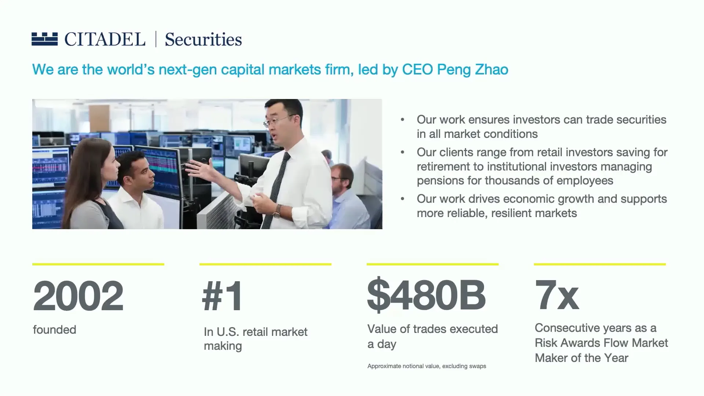
Our mission, set by CEO Peng Zhao: founded 2002, #1 on Wall Street, $480B equity AUM, 7x daily transactions vs peers
CEO Peng Zhao 制定的使命：2002 年成立、华尔街第一、4,800 亿美元股票 AUM、日均交易量为同行 7 倍
[00:37 – 00:59]
in financial assets. Our goal is to make it as easy, efficient, and cheap, as possible for our customers to trade financial products. We do this by first connecting to the world's large financial centers and taking in all the data that they generate.
在金融资产中。我们的目标是让我们的客户交易金融产品尽可能简单、高效、便宜。为此，我们首先连接到世界大型金融中心并获取它们生成的所有数据。
[00:59 – 01:14]
We then model this data to predict future prices of financial securities. You could say that we've been predicting the next price before the rest of the world began predicting the next token. And then once we have predictions of future prices,
然后，我们对这些数据进行建模来预测金融证券的未来价格。你可以说，在世界其他地方开始预测下一个代币之前，我们就已经预测了下一个价格。然后一旦我们预测了未来的价格
[01:14 – 01:33]
we put them in trading strategies that make decisions on what to buy and sell and how to manage risk. And we do this at very large scale. In the US stock market, we trade roughly 20 to 25% of the total volume.
我们将它们纳入交易策略中，以决定买卖什么以及如何管理风险。我们大规模地这样做。在美国股市，我们的交易量大约占总交易量的 20% 到 25%。
[01:33 – 01:52]
And we are the largest retail market maker. Globally, we trade around half a trillion dollars worth of financial assets every day to give you a sense of scale that's roughly the GDP of the world for a day. We trade more than the GDP of the world.
我们是最大的零售做市商。在全球范围内，我们每天交易价值约 5000 亿美元的金融资产，让您感受到规模大致相当于世界一天的 GDP。我们的贸易额超过了世界的国内生产总值。
[01:53 – 02:10]
And all of our trading is based on a foundation of cutting-edge machine learning and deep learning research. And that's why we're here today at NeurIPS, both to learn from the academic community and also to find the next generation
我们所有的交易都是基于尖端机器学习和深度学习研究的基础。这就是为什么我们今天来到 NeurIPS，既是为了向学术界学习，也是为了寻找下一代
Title slide repeat
标题页重复
[02:10 – 02:15]
of our research leaders. With that intro, please join me in welcoming my colleague, Dianqi Li.
我们的研究领导者。在此介绍之后，请和我一起欢迎我的同事李殿琪。
[02:22 – 02:35]
Hey, thanks everyone. I'm coming for Citadel Securities expo panel talk at NeurIPS. My name is Dianqi. I have been looking for Citadel Securities for four years as a Quantitative Researcher.
嘿嘿，谢谢大家。我将参加 NeurIPS 的 Citadel 证券博览会小组演讲。我叫Dianqi Li。作为一名定量研究员，我已经寻找 Citadel 证券四年了。
[02:35 – 02:53]
Many focus on driving the AI techniques like a financial model, especially a large model for the trading business at the Citadel Securities. Before I come to Citadel Securities, I got my PhD from University of Washington with a focus on NLP, deep learning,
许多人专注于驱动人工智能技术，例如金融模型，尤其是 Citadel 证券交易业务的大型模型。在加入 Citadel 证券之前，我在华盛顿大学获得了博士学位，重点研究 nlp、深度学习、
[02:53 – 03:09]
and a large language model. And I also spent quite a meaningful time at Microsoft Research when I was in Seattle. So today I'm going to share some insight how we view a large language model to interpret the information
和一个大的语言模型。当我在西雅图的时候，我也在微软研究院度过了一段非常有意义的时光。所以今天我将分享一些我们如何看待大型语言模型来解释信息的见解
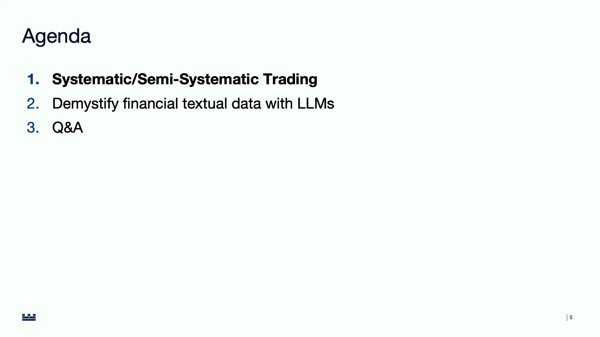
Outline: 1. Systematic/Semi-Systematic Trading – Demystify financial textual data with LLMs; 2. Q&A
大纲：1. 系统化/半系统化交易——用 LLM 拆解金融文本数据；2. Q&A
系统化/半系统化交易与自动阅读系统
- 自动阅读系统：用数学模型在人工监督下做交易决策
- 阅读流水线：输入 → 信号 → 盈亏
- 实际股价走势图展示系统相对基准的表现
[03:09 – 03:18]
for some like complex financial textual data and how it can help some business at a quantitative trading field.
对于一些复杂的金融文本数据以及它如何帮助定量交易领域的某些业务。
[03:20 – 03:33]
To talk, we have two parts. The first part, I will give you a very high level concept introduction about what's systematic trading and the same as systematic trading. To help you guys better understand easily, I will mostly use some language
说起来，我们有两个部分。第一部分，我将为您提供一个非常高层次的概念介绍，介绍什么是系统交易以及与系统交易相同的内容。为了帮助大家更好的理解，我主要会使用一些语言
[03:33 – 03:46]
from machine learning community at some high level to draw some comparison between the model we have in machine learning and also in the quant trading. So just easy to help you understand. And the second topic will show you
来自较高级别的机器学习社区，以对我们在机器学习和量化交易中的模型进行一些比较。所以很容易帮助您理解。第二个主题将向您展示
Systematic / Semi-Systematic Trading
系统化 / 半系统化交易
[03:46 – 03:59]
what kinds of financial textual data we have and how do we view what kind of role can be played by large model in this field. And after our brief presentation, we will have some Q&A session at the end.
我们有什么样的金融文本数据，我们如何看待大模型在这个领域可以发挥什么样的作用。在我们简短的演讲之后，我们将在最后进行一些问答环节。
[04:01 – 04:15]
Since there are a lot of existing tasks in quantitative trading field, so we will narrow down our task as the most easiest one. It's basically we have some underlying assets we want to predict the price change.
由于量化交易领域现有的任务有很多，因此我们将缩小任务范围，选择最简单的任务。基本上我们有一些基础资产想要预测价格变化。
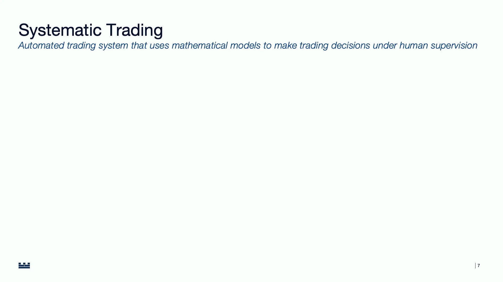
An automated reading system that uses mathematical models to make trading decisions under human supervision
在人工监督下用数学模型做交易决策的自动阅读系统
[04:15 – 04:31]
And so that's a single goal. Once we have the price prediction, we know how we buy or sell the underlying assets. First, what's systematic trading? Basically, it's just an automatic trading system that fully use a mathematical model
所以这是一个目标。一旦我们有了价格预测，我们就知道如何买卖标的资产。首先，什么是系统交易？基本上，它只是一个完全使用数学模型的自动交易系统
[04:31 – 04:49]
to design, develop, and to execute the final decision making fully automated. But still, we will have some human to serve as a supervision at the end because we don't want the automatic system to run fairly without any control and regulation.
设计、开发和执行最终决策完全自动化。但最终我们还是会有一些人来作为监督，因为我们不希望自动化系统在没有任何控制和调节的情况下公平地运行。
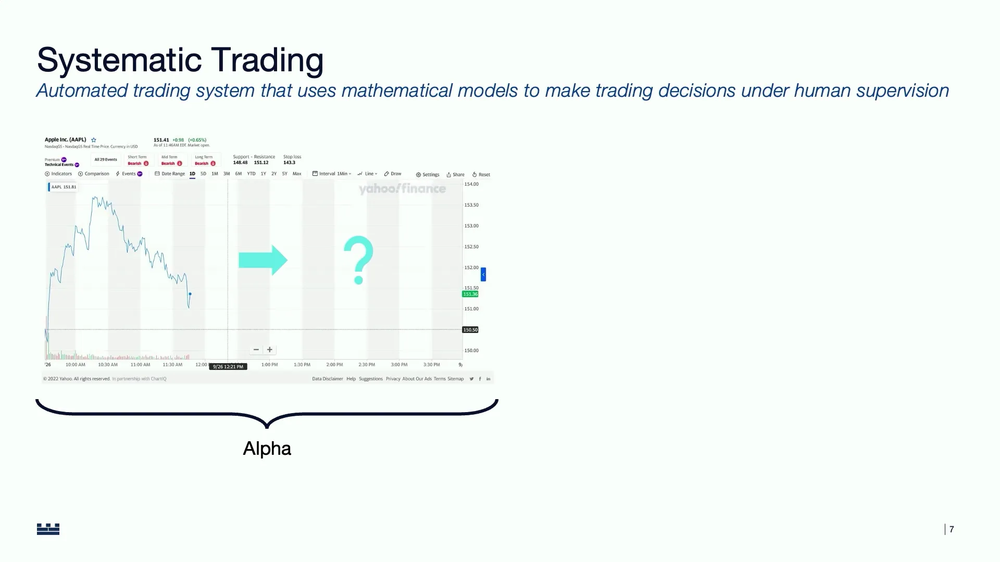
Model-driven reading pipeline with charts: input → signal → PnL
模型驱动的阅读流水线（图表）：输入 → 信号 → 盈亏
[04:49 – 05:05]
There are two key parts in systematic trading. The first one is called Alpha, or usually we call the Alpha research. Let me give you a really quick example. Say if we want to predict the Apple stock price change today, so the price change is the target of Y,
系统交易有两个关键部分。第一个叫做Alpha，或者通常我们称之为Alpha研究。让我给你一个非常简单的例子。假设我们要预测今天苹果股价的变化，那么价格变化就是Y的目标，
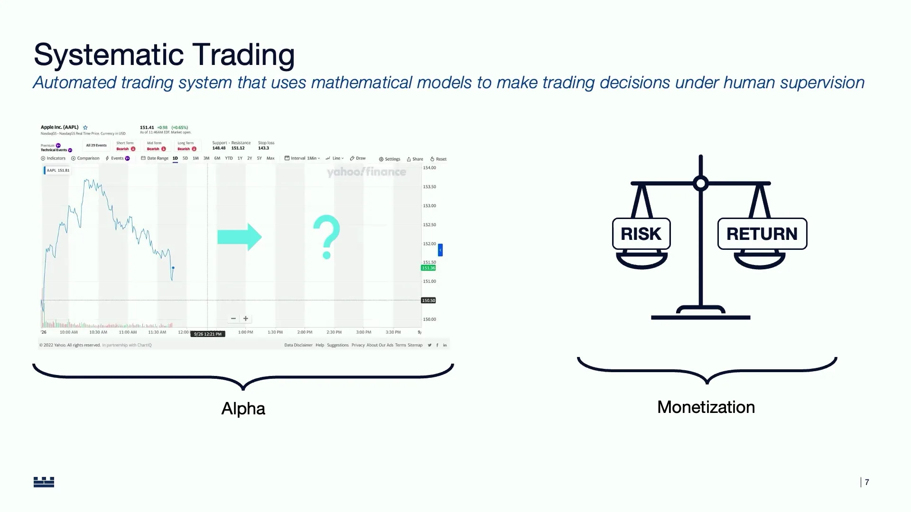
Price chart illustrating automated reading performance vs benchmark
展示自动阅读系统相对基准表现的股价走势图
[05:05 – 05:20]
and also we have a lot of different kind of data we call the X. And when we build a model between the X and Y, if the model has a very reasonable prediction against the Y, so basically the prediction is what we call the Alpha.
我们还有很多不同类型的数据，我们称之为 X。当我们在 X 和 Y 之间构建模型时，如果该模型对 Y 有非常合理的预测，那么基本上预测就是我们所说的 Alpha。
[05:20 – 05:35]
The second step is once we have the Alpha, the second goal is we try to monetize this Alpha so we can make the profit on the market. Basically, in this step, we build some portfolio optimization strategy to try to maximize our reward, but also we will have some risk control
第二步是一旦我们有了阿尔法，第二个目标是我们尝试将阿尔法货币化，这样我们就可以在市场上获利。基本上，在这一步中，我们建立一些投资组合优化策略来尝试最大化我们的回报，但我们也会有一些风险控制
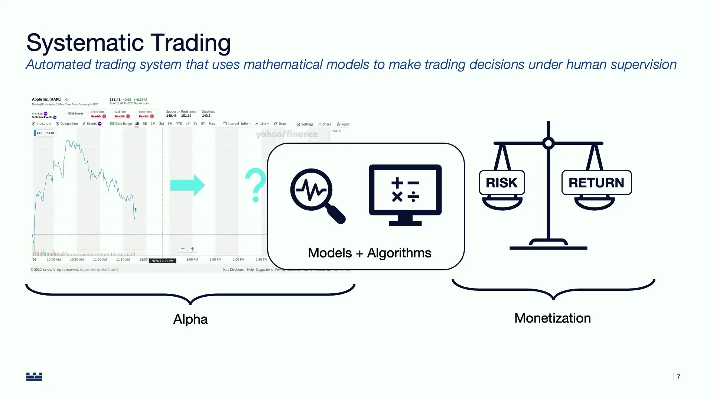
Two pillars: Alpha (excess return) + Generalization (cross-market robustness)
两大支柱：Alpha（超额收益）+ 泛化（跨市场稳健性）
两大支柱：Alpha 与泛化
- Alpha：超额收益
- Generalization：跨市场、跨资产的稳健性
- 核心来自「模型 + 算法」的组合
[05:35 – 05:49]
in case we lose all the money. So there's a trade-off between the reward and the risk control. So that's the main step for the monetization part. For systematic trading, most of the components will be covered by automated models
以防我们失去所有的钱。因此，在回报和风险控制之间需要进行权衡。这是货币化部分的主要步骤。对于系统化交易，大部分组件将被自动化模型覆盖
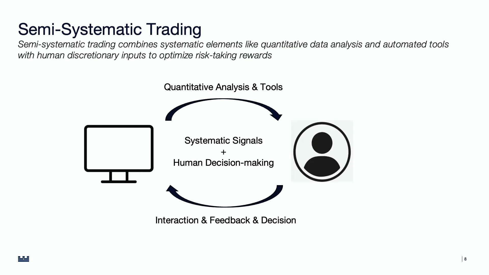
Models + Algorithms → Alpha & Generalization
模型 + 算法 → Alpha 与泛化
[05:49 – 06:05]
and automated the algorithm. So that's why we call it systematic trading. On the other side, we have something called a semi-systematic trading. So basically, semi-systematic trading is we leveRAGe the signal or the component
并使算法自动化。这就是为什么我们称之为系统交易。另一方面，我们有一种叫做半系统交易的东西。所以基本上，半系统交易是我们利用信号或组件
[06:05 – 06:19]
from a systematic trading side. For example, automated tools, some quantitative data analysis, or even the final Alpha we get from the systematic trading to fit into the human. Like traders, fundamental analysts.
从系统化的交易角度来看。例如，自动化工具，一些定量数据分析，甚至是我们从系统交易中获得的最终阿尔法，以适应人类。就像交易员、基本面分析师一样。
[06:19 – 06:34]
So they will make the final decision to say, okay, whether we trade or sell the stock at the end. As an example, say let's unveil the price. Today is around 140. If the Alpha from systematic side says the price should be 150,
所以他们会做出最终决定，好吧，我们最后是交易还是出售股票。举个例子，让我们公布一下价格。今天是140左右，如果系统方面的Alpha说价格应该是150，
[06:34 – 06:46]
then the systematic side will trigger some buy signal for on the systematic side. But on the semi-systematic side, maybe some traders and fundamental analysts have very strong priority that, okay, the actual price is overly priced,
那么系统性方面就会触发系统性方面的一些买入信号。但在半系统性方面，也许一些交易者和基本面分析师非常优先考虑，好吧，实际价格定价过高，
[06:46 – 06:59]
so it should be 120. So it will make the adjustment to adjust the 150 to 120. So it will trigger a sell signal. So basically, that's how semi-systematic trading works. So basically, the human will make an adjustment
所以应该是120。所以它会进行调整，将150调整为120。这样就会触发卖出信号。基本上，这就是半系统交易的运作方式。所以基本上，人类会做出调整
[06:59 – 07:14]
on the systematic signal. And on the same time, we also collect those adjustments at the label so that we can in turn to further improve the quality of the systematic signal side. So the ultimate goal is on the both side,
关于系统信号。同时，我们也在标签上收集这些调整，以便我们可以进一步提高系统信号侧的质量。所以最终的目标是双方的
[07:14 – 07:28]
we want to, the both side could involve together to the next level of the performance. So which means the human can adjust the signal better and better, so we collect the signal from the human in that we can feed it back to the systematic side
我们希望双方能够共同将表演提升到一个新的水平。所以这意味着人类可以越来越好地调整信号，所以我们从人类那里收集信号，然后将其反馈到系统端
Interaction & Feedback & Decision: human-in-the-loop decision making
交互、反馈与决策：人在回路的决策过程
交互、反馈与决策：人在回路
- Interaction & Feedback & Decision 是系统化交易的核心环节
- Quantitative Analysis & Trade 闭环
- 强调人在关键节点上的判断不可被完全替代
[07:28 – 07:44]
so you can improve systematic signal. And at the end, the systematic signal can also feed an even better signal to the human so they can make an even wise trading decision at the end so that it will consist a loop in here. I think a lot of people,
这样您就可以改善系统信号。最后，系统信号还可以向人类提供更好的信号，以便他们最终可以做出更加明智的交易决策，从而在此处构成一个循环。我想很多人，
[07:44 – 08:01]
you will be familiar with this figure because it's basically just a reinforced learning human feedback in modern model. We have very similar idea, but it's just we interpret this in a different form and inject in the trading business.
你会熟悉这个数字，因为它基本上只是现代模型中的强化学习人类反馈。我们有非常相似的想法，但只是我们以不同的形式解释它并注入到贸易业务中。
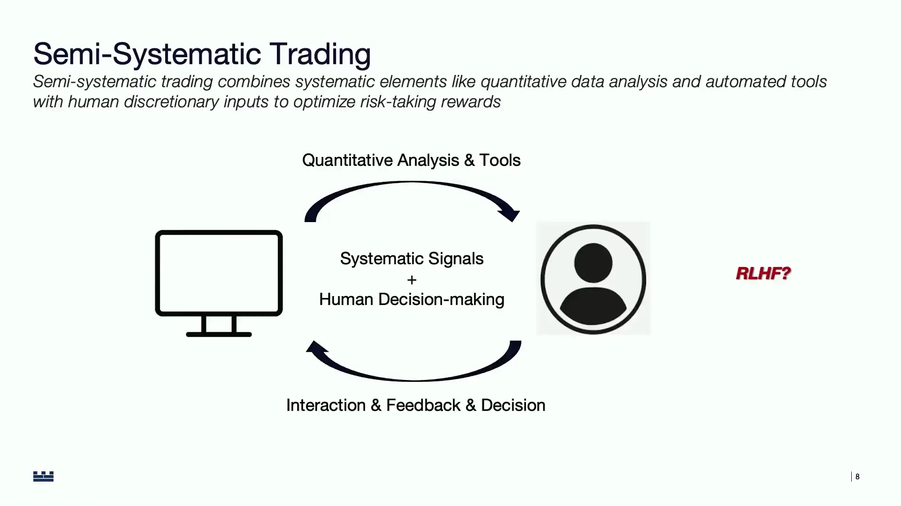
Interaction & Feedback & Decision (panel logo)
交互、反馈与决策（演讲者标识）
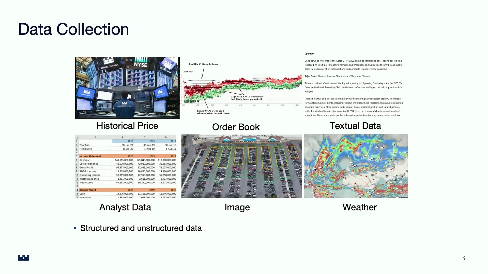
Quantitative Analysis & Trade pipeline
量化分析与交易流水线
[08:01 – 08:14]
Okay, so for both kind of like the strategy, we will, the first task is we want to collect some data so we can predict the Y because the Y is very simple. It's basically the price change for some certain assets want to predict it all.
好的，对于这两种类似的策略，我们会，第一个任务是我们要收集一些数据，以便我们可以预测 Y，因为 Y 非常简单。基本上是某些特定资产的价格变化想要预测这一切。
[08:14 – 08:25]
We have some historical price. I think you will say every day and also some order book which reflects the microstructure for the price and also the textual data which will be the main topic for today
我们有一些历史价格。我想你每天都会说一些反映价格微观结构的订单簿以及文本数据，这将是今天的主题
[08:25 – 08:38]
has the news, earnings, and all the assets, whatever, the textual data. And some company will also purchase this analyst data from third party vendors and maybe some company are interested in the image data so it can predict customer call,
有新闻、收益和所有资产，无论如何，文本数据。有些公司还会从第三方供应商购买这些分析数据，也许有些公司对图像数据感兴趣，以便它可以预测客户呼叫，
[08:38 – 08:52]
or mass customer flow in the next quarter. And also for rest data, sometimes it will be also very useful because the weather can predict the temperature and the temperature can reflect a certain assets like electricity, natural gas,
或下个季度的大量客流。对于其他数据，有时它也会非常有用，因为天气可以预测温度，而温度可以反映某些资产，例如电力、天然气、
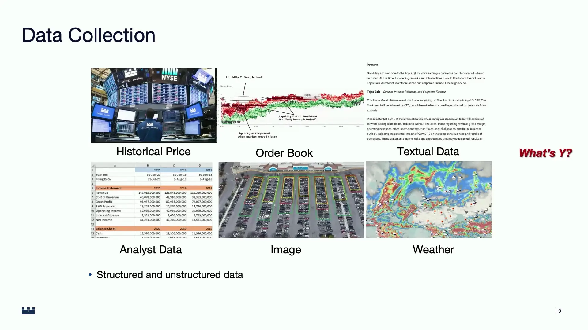
Multi-modal inputs: Order Book, Market Data, Text Data, Analyst Data, Image, Weather
多模态输入：订单簿、市场数据、文本数据、分析师研报、图像、天气
金融数据的多模态来源
- 结构化 + 非结构化数据并存：订单簿、市场数据、文本、分析师研报、图像、天气
- 数据规模与异构性是底层挑战
[08:52 – 09:06]
the price change for those kind of assets. So it's also quite useful. So those kind of data are all the X variables we're talking about and also the Y. So why basically we can simply just say, okay, it's a price change for the asset want to predict.
此类资产的价格变化。所以它也是非常有用的。所以这些类型的数据就是我们正在讨论的所有 X 变量以及 Y。所以为什么基本上我们可以简单地说，好吧，这是想要预测的资产的价格变化。
[09:06 – 09:22]
But to note that is if you actually use the Y to make the price change as a Y for the target, it will be super noisy and then the model would be very easy to overfit because you can imagine that as a price change is not only determined by one system of data,
但要注意的是，如果你实际上使用 Y 来使价格变化作为目标的 Y ，那么它会非常嘈杂，然后模型很容易过拟合，因为你可以想象，价格变化不仅由一个数据系统决定，
[09:22 – 09:37]
but also determined by other factors. For example, NVIDIA as a price would mostly affected by the supply demand for GPUs, but also affected by the regulation of what happened yesterday is the antitrust from China. And also the stock has a brand new motion by itself.
但也由其他因素决定。例如，NVIDIA的价格主要会受到GPU供应需求的影响，但也会受到昨天发生的中国反垄断监管的影响。而且该股票本身也有一个全新的走势。
[09:37 – 09:56]
So which means a certain type of data has a very low noise to signal ratio with respect to the target to predict. So that's why in quantitative finance field and also for some other finance field, the high quality labels are very difficult to collect.
因此，这意味着某种类型的数据相对于要预测的目标具有非常低的噪声信号比。所以这就是为什么在量化金融领域以及其他一些金融领域，高质量的标签很难收集。
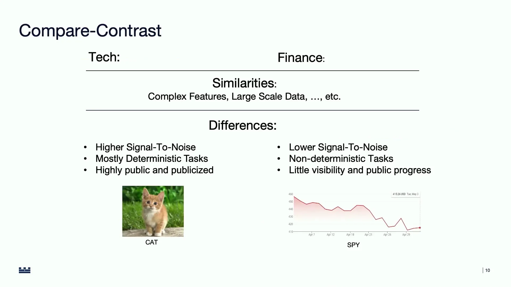
Structured + unstructured data inputs feeding the trading model
结构化 + 非结构化数据共同输入交易模型
[09:57 – 10:12]
I want to draw a quick comparison between the task we have in tech industry and also in finance industry. So both the talks are very, has a little complex feature and very large scale data, but also there are some key difference.
我想快速比较一下我们在科技行业和金融行业的任务。所以这两个会谈都非常，都有一点复杂的特征和非常大规模的数据，但也有一些关键的区别。
[10:12 – 10:24]
For example, in the tech industry, most of the tasks are, the data are very clean, has a very high signal to noise ratio, and most of the tasks are deterministic. So what that then means is basically if we want to do some image classification,
例如，在科技行业，大多数任务都是，数据非常干净，具有非常高的信噪比，并且大多数任务是确定性的。那么这基本上意味着如果我们想做一些图像分类，
[10:24 – 10:39]
so that image is a cat, so nobody would say it's a dog, right? And after 100 year later, it still would be a cat. So the target is very clear. But for quantitative trading, if you want to predict the market behavior,
所以那个图像是一只猫，所以没有人会说它是一只狗，对吗？ 100年后，它仍然是一只猫。所以目标非常明确。但对于量化交易来说，如果你想预测市场行为，
[10:39 – 10:55]
their target is not a very deterministic because for example, nobody can predict COVID and nobody could predict what happened on the market during the COVID. So the market has a lot of different conditions and making it sort of has more dynamic movements
他们的目标不是一个非常确定的目标，因为例如，没有人可以预测新冠病毒，也没有人可以预测新冠病毒期间市场上发生了什么。因此，市场有很多不同的条件，这使得市场的走势更加动态
[10:55 – 11:10]
during different periods. So that's making the task even hard to predict and also the low signal to noise ratio. And also a key part, another key part is the information in the tech industry usually are very easy to accessible
在不同时期。因此，这使得任务变得更加难以预测，并且信噪比也很低。还有一个关键部分，另一个关键部分是科技行业的信息通常很容易获取
[11:10 – 11:26]
and also a lot of information would be public. But for finance, especially quantitative trading, most of the information are not public and less accessible to the general people. There are two reasons. The first one is before some regulation and the policy,
而且很多信息也会公开。但对于金融，尤其是量化交易来说，大部分信息并不公开，一般人不太容易接触到。有两个原因。第一个是在一些监管和政策出台之前，
[11:26 – 11:40]
most of the company cannot publish the information directly. And another reason, from my perspective of you, basically I feel like it's just the nature of this industry, because I can ask you a simple question.
大多数公司无法直接发布信息。还有一个原因，从我的角度来看，基本上我觉得这就是这个行业的本质，因为我可以问你一个简单的问题。
[11:40 – 11:58]
So if you have a very successful consistency strategy to make the money, tons of money every year, will you make the strategy public to all the people around the world? So that's because we won't tell any other people. For the language of game theory, it's very simple
因此，如果你有一个非常成功的一致性策略来赚钱，每年赚很多钱，你会把这个策略公开给世界各地的所有人吗？那是因为我们不会告诉任何其他人。对于博弈论的语言来说，非常简单
[11:58 – 12:15]
because if all the player on the market has equal information, has exactly capability to create the market, then they will reach equilibrium position and nobody can make a profit from others. So that's why a successful trading company,
因为如果市场上的所有参与者都拥有平等的信息，并且完全有能力创造市场，那么他们就会达到均衡位置，没有人可以从别人那里获利。这就是为什么一家成功的贸易公司，
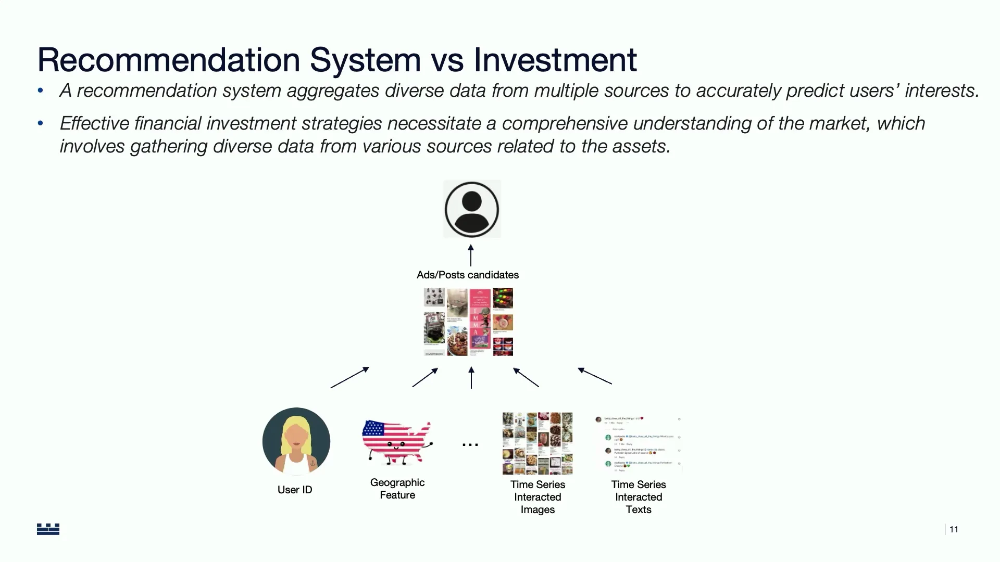
Textual Data in Finance: Difficulties — Complex features, Long horizon, Many tasks; vs Lower Signal-To-Noise, Heterogeneous types, Low visibility & slow updates
金融文本数据的难点：特征复杂、跨度长、任务多样；信噪比低、类型异构、可见度低且更新滞后
金融文本数据的难点：精度 vs 召回率
- 三大难：特征复杂、跨度长、任务多样
- 三大对应问题：信噪比低、类型异构、可见度低且更新滞后
- Precision & Recall Trade-off：必须对市场有全面理解才能谈有效策略
[12:15 – 12:29]
if they want to make an advantage over others, usually they will try to collect as many useful data as possible and also try to make the prediction as precise as possible. So that's why I usually will make comparison
如果他们想比其他人更有优势，通常他们会尝试收集尽可能多的有用数据，并尝试使预测尽可能精确。所以这就是为什么我通常会进行比较
[12:29 – 12:41]
between the recommendation system and also the investment strategy because for example, for Instagram and Snapchat, when they try to predict the user behavior, they will try to collect as much
推荐系统和投资策略之间存在差异，因为例如，对于 Instagram 和 Snapchat，当他们试图预测用户行为时，他们会尝试收集尽可能多的信息
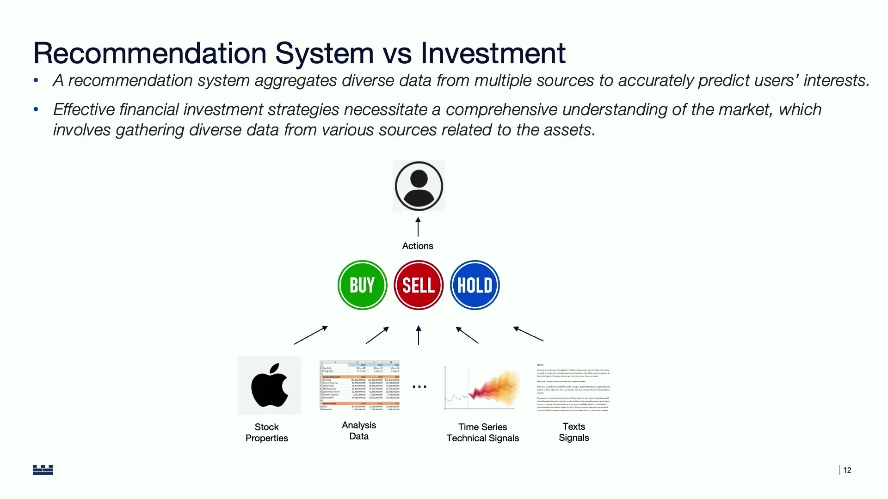
Precision & Recall Trade-off — Effective financial investment strategies require comprehensive understanding of the market
精度与召回率的权衡——有效的金融投资策略需要对市场有全面理解
[12:41 – 12:58]
as the information from you as possible so they can predict your behavior. So they can feel very precise, the relevant items or their ads to you. So you can collect that so they can make the money. Similar for us, but our target is not a user,
尽可能从您那里获取信息，以便他们可以预测您的行为。这样他们就可以非常准确地感受到，相关的物品或他们的广告给你。所以你可以收集这些，这样他们就可以赚钱。我们也类似，但是我们的目标不是用户，
[12:58 – 13:12]
our target is a market. We want to collect as much information from the market to fully get a comprehensive view about how the market will behave in the next few seconds or even in a few days. So we collect those information
我们的目标是市场。我们希望从市场上收集尽可能多的信息，以全面全面地了解市场在未来几秒钟甚至几天内的表现。所以我们收集这些信息
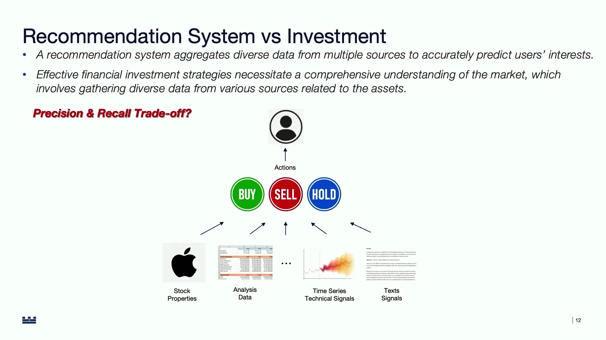
Same Precision/Recall trade-off slide, different framing
同一精度/召回率权衡页，不同表述
[13:12 – 13:27]
and make a prediction and get a full view and then we will have some people at the end or systematic trading to file the final shot to make the prediction so we can make a profit from the market. But also there are some key differences
并做出预测并获得全面的了解，然后我们将有一些人在最后或系统交易中提交最后的镜头以进行预测，以便我们可以从市场中获利。但也存在一些关键差异
[13:28 – 13:44]
between the recommendation system and for our system. For recommendation system, for precision part, I think the downside is prediction run, then the downside would be that user won't interest in the ads or the recommendation items so the company won't make the money.
推荐系统和我们的系统之间。对于推荐系统，对于精确部分，我认为缺点是预测运行，那么缺点就是用户不会对广告或推荐项目感兴趣，因此公司不会赚钱。
[13:44 – 13:59]
But for us, we have a very low tolerance about the precision because you have a low precision. That means our offer is run. You probably trade a run direction, then it will directly let us lose a lot of money. So that's why we have low tolerance on the precision.
但对于我们来说，我们对精度的容忍度非常低，因为你的精度很低。这意味着我们的报价已执行。你很可能交易了一个运行方向，那么就会直接让我们损失很多钱。这就是为什么我们对精度的容忍度较低。
[13:59 – 14:14]
But meanwhile, we also care about the record because it can capture as many as the trading opportunity on the market so it can help us scale up the P&L on the market. So yeah, basically we just want to collect a full view about the market,
但同时，我们也关心记录，因为它可以捕获尽可能多的市场上的交易机会，从而帮助我们扩大市场上的损益。所以是的，基本上我们只是想收集有关市场的完整视图，
Title slide repeat (transition)
标题页重复（过渡）
[14:14 – 14:31]
collect whatever the data set that we have. So that's why either coming to the second part, we will, the textual data is a very key important part in the market. So in this part, we show what kinds of data we are facing and what kind of role
收集我们拥有的任何数据集。所以这就是为什么无论是进入第二部分，我们都会，文本数据是市场中非常关键的重要部分。所以在这一部分，我们展示我们面临什么样的数据以及什么样的角色
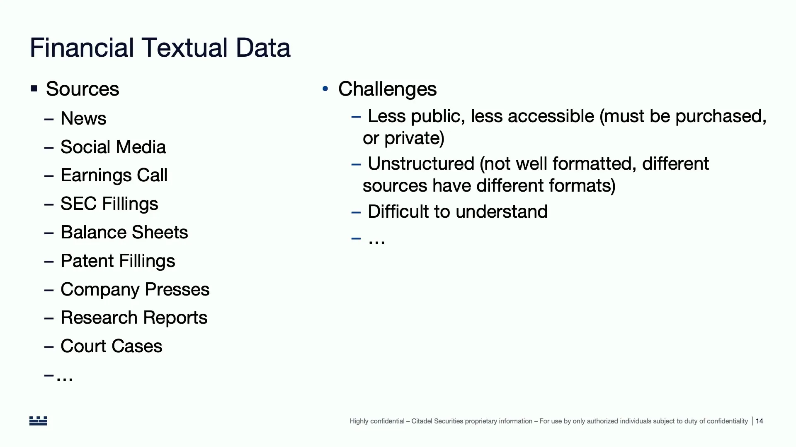
Challenges: News, Social Media, Earnings Call, SEC Filings, Balance Sheets, Patent Filings, Company Phrases, Research Reports, Court Cases — vs Less public/accessible, Unstructured, Difficult to understand
数据来源挑战：新闻、社媒、财报电话会、SEC 备案、财报、专利、公司公告、研报、庭审记录——来源公开度低、获取难、非结构化、难理解
数据来源挑战全景：公开度与可读性
- 来源清单：新闻、社媒、财报电话会、SEC 备案、财报、专利、公司公告、研报、庭审记录
- 痛点：很多源公开度低、需购买或爬取；非结构化、句式与版式各异；领域术语晦涩
[14:31 – 14:36]
can be played by large language model for those kinds of data.
可以通过大型语言模型来处理这些类型的数据。
[14:38 – 14:53]
I categorize those textual data into different parts. News, I think, and social media, I think a lot of people, you are quite familiar with. And also there are some other earnings, as is the failing, most of the data can be accessed by most of the people,
我将这些文本数据分类为不同的部分。我认为新闻和社交媒体，我想很多人都非常熟悉。还有一些其他收益，失败也是如此，大多数数据可以被大多数人访问，
[14:53 – 15:08]
but there are some part of the proprietary data are very private or specific to certain trading company. So that's making some of the data less public and less accessible to the people. And also most of the data are not pure express in the plain language.
但有些专有数据是非常私密的或特定于某些贸易公司的。因此，这使得一些数据的公开程度降低，人们也更难获取。而且大多数数据并不是用简单的语言来表达的。
[15:08 – 15:26]
So it has less, it's unstructured. It's really hard to directly apply the large language model. So we'll take a look on that to this later. And also it's very easy to, it's not very easy to understand some of the data from the language point of view.
所以它的内容较少，而且是非结构化的。直接应用大语言模型确实很难。所以我们稍后会讨论这一点。而且从语言的角度来看，理解一些数据也很容易，但不是很容易。
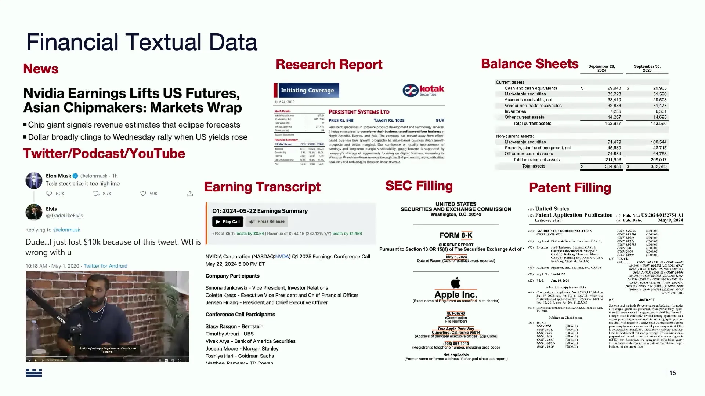
News example: screenshots from Bloomberg / WSJ / Reuters / Twitter / SEC Filing
新闻示例：彭博 / WSJ / 路透 / Twitter / SEC 备案截图
[15:26 – 15:41]
So I lead, I post a few example in here to give you some idea about what kind of those data looks like, including the news. And a lot of people, I think probably feel like it would be a joke, said like a social media can affect our stock market,
因此，我在这里发布了一些示例，让您了解这些数据是什么样的，包括新闻。我想很多人可能觉得这是一个笑话，说社交媒体可以影响我们的股票市场，
[15:41 – 16:04]
but actually it's true because, so there is an example about, where Elon Musk post a tweet at the May 1st, 2020. So he commented that, okay, Tesla stock was too high. So he's a notable figure second and the Tesla stock just directly slumping for almost like a 10%.
但实际上这是真的，因为有一个例子，埃隆·马斯克在 2020 年 5 月 1 日发布了一条推文。所以他评论说，好吧，特斯拉股票太高了。所以他是第二位值得注意的人物，而特斯拉的股价直接下跌了近 10%。
[16:04 – 16:17]
So that's what I mean. Stock market is not only affected by one certain type of source, but it has been mutually affected by different factors and a lot of different conditions on the market, making the prediction task really hard.
这就是我的意思。股票市场不仅受到某一类来源的影响，而且还受到不同因素和市场上许多不同条件的相互影响，使得预测任务非常艰巨。
[16:17 – 16:33]
And also we have a Research Report, some Balance Sheet, and as he's following, those kinds of data are not only purely written in plain language, but also has a lot of complex structure, for example, tables and also plots.
我们还有一份研究报告，一些资产负债表，正如他所言，这些类型的数据不仅纯粹用简单的语言编写，而且还有很多复杂的结构，例如表格和图表。
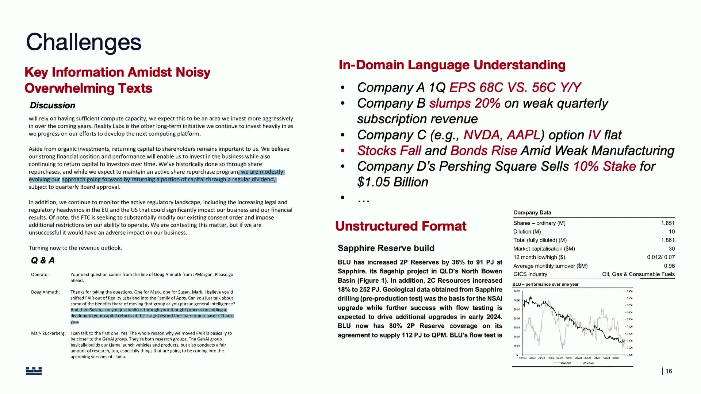
Key information across many platforms & types — Tweet, Press Releases, stock-level facts embedded in long documents
跨平台、跨类型的关键信息：推文、新闻稿、藏在长文档中的个股事实
跨平台跨类型的关键信息抽取
- 同一条事实分散在推文、新闻稿、长文档里
- 需要把不同格式、长度、来源的信息归并为可被模型使用的字段
- 示例：彭博 / WSJ / 路透 / Twitter / SEC 备案的对照
[16:33 – 16:50]
The how do we decipher the information from them is also the key part, the successful factor in this industry. Besides the unstructured format, I will say other key challenging in understanding the textual data in finance
如何解读他们的信息也是这个行业的关键，也是成功的因素。除了非结构化格式之外，我还想说一下理解金融文本数据的其他关键挑战
[16:50 – 17:10]
is the most useful, the key information usually is a hidden within overwhelming noisy attacks. The last example shows the earnings report from META, Q4, 2023 last year. So from the first time, they give the dividends to all the investor.
是最有用的，关键信息通常隐藏在压倒性的噪音攻击中。最后一个示例显示了 META 去年 2023 年第四季度的收益报告。所以从第一次开始，他们就给所有投资者分红。
[17:10 – 17:24]
But if you look at all the earnings report before that quarter, META has a very subtle or vague statements about the dividends because they will, at first it will emphasize they wanna release the dividend to all the investor
但如果你看一下该季度之前的所有收益报告，META 对股息有一个非常微妙或模糊的陈述，因为他们首先会强调他们想向所有投资者发放股息
[17:24 – 17:36]
until some of the quarter, they will remove that statement. Didn't mention anything about the dividends until the last quarter, they will say, okay, we are going to release dividends to the other investor.
直到本季度的某个时候，他们才会删除该声明。直到上个季度才提到任何有关股息的事情，他们会说，好吧，我们将向其他投资者发放股息。
[17:36 – 17:52]
So how do we capture those subtle change and the vague information within thousands of sentence, like a couple, like 20 pages. So it's also very challenging to predict the market in finance. And also compared with public textual data,
那么，我们如何捕捉数千个句子（例如几句话，例如 20 页）中那些微妙的变化和模糊信息。所以预测金融市场也非常具有挑战性。并且与公开的文本数据相比，
[17:52 – 18:05]
in finance we have some in domain language distribution. So how could we let large language model to fully understand those kind of keywords is also quite important. Like first of all,
在金融领域，我们有一些领域语言分发。那么如何让大型语言模型能够充分理解这类关键词也是相当重要的。首先，
[18:05 – 18:18]
so what does EPS mean? What does META and how we link META to META and Apple, AAPL to Apple? And what does IV mean? IV mean implied volatility. So what does implied volatility flat
那么EPS是什么意思呢？ META 是什么？我们如何将 META 与 META 以及 apple、AAPL 与 apple 联系起来？ IV 是什么意思？ IV 表示隐含波动率。那么隐含波动率平坦是指什么呢？
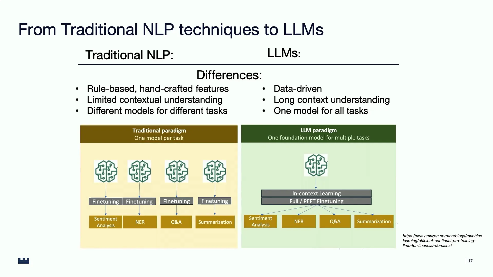
Traditional NLP vs LLMs: Rule-based & hand-crafted (powerful but only as good as the human) vs Data-driven & long-context (still a work in progress)
传统 NLP vs LLM：基于规则、手工编写（强但受限于人）vs 数据驱动、长上下文（仍在演进）
传统 NLP vs LLM：能力与短板
- 传统 NLP：基于规则、人工编写特征；上限取决于人
- LLM：数据驱动、长上下文；仍处在演进中
- 两者并非替代关系，应视任务组合使用
[18:18 – 18:35]
means to the market to META stock? Something like that. Similar as the AI community, we have also seen some transition from traditional NLP's to the model, modern large language model.
意味着META股票上市？类似的事情。与人工智能社区类似，我们也看到了从传统 nlp 到模型、现代大语言模型的一些转变。
[18:35 – 18:47]
Once upon a time, we also has a lot of different kinds of NLP techniques and the model to predict each individual task. And right now we also have seen large language model has a very strong zero shot or a few short capability
曾几何时，我们也有很多不同种类的 nlp 技术和模型来预测每个单独的任务。现在我们也看到大型语言模型具有非常强的零镜头或一些短的能力
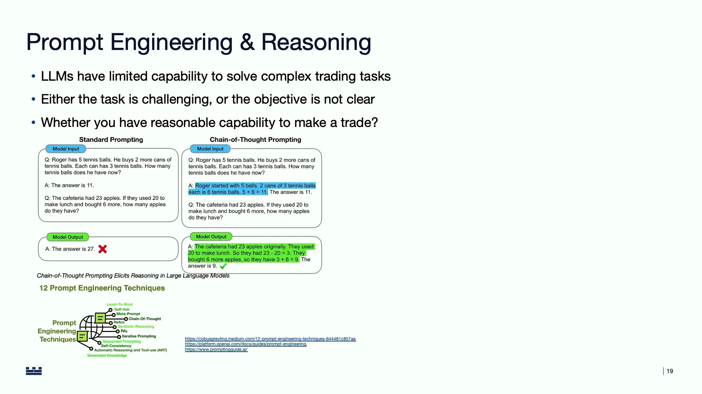
Can you tell whether Apple is expected to...? — chatbot interface with chart
你能判断苹果是否将……吗？——带图表的对话式界面
案例：判断「是否要交易」——以苹果为例
- 对话式界面：能否判断苹果的某个预期
- 同一问题在不同上下文下结论可能不同
- 对模型推理与可解释性提出要求
[18:47 – 19:07]
to facilitate most of the NLP tasks we have in finance. So that's why a lot of tasks can be also merged into a single model. About the domain shift from the regular public textual data to financial data, one very regular technique
促进我们在金融领域的大部分 nlp 任务。这就是为什么很多任务也可以合并到一个模型中。关于从常规公共文本数据到金融数据的领域转移，一种非常常规的技术
[19:07 – 19:27]
is basically we continue pre-training the large language model or we do the SFT or our RLHF because pre-training can help us to ingest some financial specific domain knowledge into the model. And the SFT and our RLHF could align the output format from large language model to the format
基本上，我们继续预训练大型语言模型，或者进行 SFT 或 RLHF，因为预训练可以帮助我们将一些金融特定领域的知识摄入到模型中。 SFT 和我们的 RLHF 可以将大语言模型的输出格式与格式对齐
[19:27 – 19:44]
we expected in our business. Compared with some regular training techniques, from my view, the most important top pay or the part could be still how do we allow the large language model to understand the trading logic,
我们期望在我们的业务中。与一些常规的训练技术相比，在我看来，最重要的部分可能仍然是我们如何让大语言模型理解交易逻辑，
[19:44 – 19:56]
to understand, to help us to make a better decision on the market and how do they know what we are looking for. But before that, I think the question is to ask us or ask you that,
了解，帮助我们在市场上做出更好的决策，以及他们如何知道我们在寻找什么。但在此之前，我认为问题是问我们或问你，
[19:56 – 20:10]
can you understand what kind of trades you want to make? Or do you understand, do you have enough knowledge or the data to predict the market so that we can capture the trading opportunity?
您能理解您想要进行什么样的交易吗？或者您是否了解，您是否有足够的知识或数据来预测市场以便我们捕捉交易机会？
[20:10 – 20:24]
Because if we do not have enough knowledge, then large language model definitely doesn't, they don't help, right? Because we don't want large language model to run freely without any regulation by human prior. So in trading language understanding,
因为如果我们没有足够的知识，那么大型语言模型肯定不会，它们没有帮助，对吗？因为我们不希望大型语言模型在没有人类事先任何调节的情况下自由运行。所以在交易语言理解上，
[20:24 – 20:40]
I feel like there usually has a two level. The first one is just purely plain text, textual understanding, what does that sentence mean? And the second one is, what does the trading logic be behind that language?
我觉得通常有两个级别。第一句只是纯粹的纯文字，文字理解，那句话是什么意思？第二个问题是，该语言背后的交易逻辑是什么？
[20:40 – 20:52]
How do we use that to make the prediction? So that's why I mean, human prior is still very important. We need to ask, what kind of information we are looking for and how do we analyze those information
我们如何使用它来进行预测？所以这就是为什么我的意思是，人类先验仍然非常重要。我们需要问，我们正在寻找什么样的信息以及我们如何分析这些信息
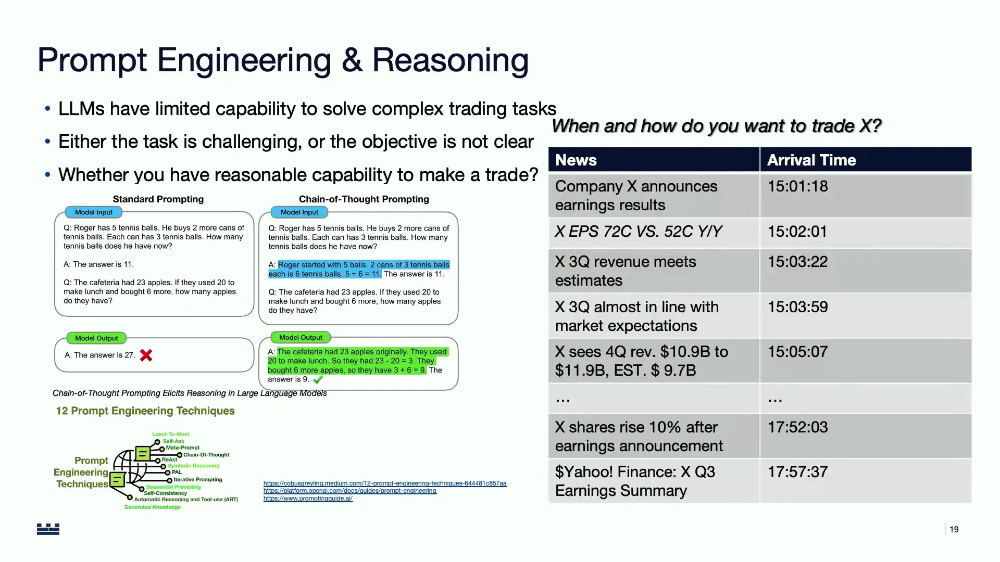
Same chatbot interface shown with data table
同一对话式界面，附带数据表
[20:52 – 20:59]
to connect with other data to get a full view about the market so we can make the best trade on the market.
与其他数据连接以全面了解市场，以便我们可以在市场上进行最佳交易。
[21:01 – 21:16]
At least the example in here, basically at least a sequential of the events described by the news and also associated by the arrival time. The question is, when I presented those kinds of data to you
至少这里的例子，基本上至少是新闻描述的事件的顺序，并且还与到达时间相关联。问题是，当我向你展示这些数据时
[21:16 – 21:31]
and when you go through the time step one to the end, how do you make the trade for X and when do you want to trade? We can go through the example one by one. So like the first one, when we reached the first news,
当您完成时间步骤一直至结束时，您如何进行 X 交易以及您想何时进行交易？我们可以一一过一遍这个例子。就像第一个一样，当我们看到第一个消息时，
[21:31 – 21:49]
basically you just announced that there's earnings for X. It doesn't contain any information, right? So probably we cannot make our decision. But when the second one is a new source sending you the information that X EPS is larger than the EPS last year.
基本上你刚刚宣布了 X 的收益。它不包含任何信息，对吗？所以我们可能无法做出决定。但是当第二个是新来源向您发送 X EPS 大于去年 EPS 的信息时。
[21:49 – 21:55]
So my first question is, will you buy or sell X at this point?
所以我的第一个问题是，此时您会买入还是卖出 X？
[22:01 – 22:14]
It's okay. It's a fake trading simulation, right? So it doesn't hurt. Just give me any idea like you have. Okay, so I heard too, like one is buy, another is sell.
没关系。这是一个假交易模拟，对吗？所以它并不痛。像你一样给我任何想法。好吧，我也听说过，一个是买入，另一个是卖出。
[22:14 – 22:17]
So for buy, why you want to buy X?
那么对于购买来说，你为什么要购买X？
[22:23 – 22:40]
Okay, and what about sell? Also, okay, so say buy is because like the EPS is higher and what about sell? Okay, sell opinions that it's already pricing. It's very close. I would say the answer is we don't know
好吧，那么卖掉呢？另外，好吧，所以说买入是因为每股收益更高，那么卖出呢？好吧，出售已经定价的意见。非常接近。我想说答案是我们不知道
[22:40 – 22:54]
because we need more information to determine our trades. So just like I said, we don't know whether the expectation of the market. Okay, if the expectation of the market of EPS is around maybe 52 or like maybe 50,
因为我们需要更多信息来确定我们的交易。所以就像我说的，我们不知道是否符合市场的预期。好吧，如果市场对 EPS 的预期可能是 52 或 50 左右，
[22:54 – 23:07]
then definitely is the best estimation or the expectation, right? So definitely that's the buy signal. But if the expectation already being maybe 80 cents, then definitely the number is lower the expectation
那么肯定是最好的估计或者期望，对吧？所以这绝对是买入信号。但如果预期已经是 80 美分，那么这个数字肯定会低于预期
[23:07 – 23:24]
than we should sell. Okay, the third role is revenue meets the estimates. I would say it's very similar to the second example. So we don't know. We need more information. And the third one is exactly the same answer.
比我们应该卖的多。好吧，第三个作用是收入达到预期。我想说它与第二个例子非常相似。所以我们不知道。我们需要更多信息。第三个是完全相同的答案。
[23:24 – 23:36]
Oh, the fourth one is exactly the same answer, the third one. And also the fourth, the fifth one is also quite important because the company gives some guidance about the future quarters.
哦，第四个和第三个的答案一模一样。第四、第五个也很重要，因为公司对未来几个季度给出了一些指导。
[23:36 – 23:50]
Usually, I think on the street, people give less estimation in the future quarter, but if you have this, it's usually a very positive signal to buy. And what about, okay, if you saw something like this,
通常，我认为在街上，人们对未来季度的估计较少，但如果你有这种情况，这通常是一个非常积极的购买信号。那么，好吧，如果你看到这样的事情，
[23:50 – 23:55]
X shares was already 10% after the earnings announcement.
财报公布后，X 股股价已达 10%。
[23:58 – 24:09]
So usually it doesn't have any useful information because it already tell you a fact what happened on the market because it already jumped 10%. So that's why I'm going to make the trades. As I mentioned, it's just,
所以通常它没有任何有用的信息，因为它已经告诉你市场上发生了什么，因为它已经上涨了 10%。这就是我要进行交易的原因。正如我提到的，只是，
[24:09 – 24:21]
imagine you are playing a game against your opponents in the game theory that, okay, you can get some actual information other than your components. So you can make the trade over them so we can make a profit.
想象一下，您正在与博弈论中的对手玩游戏，好吧，您可以获得组件以外的一些实际信息。所以你可以对它们进行交易，这样我们就可以从中获利。
[24:21 – 24:26]
So that's basically the principle for the trading to make a profit on the market.
这基本上就是在市场上进行获利交易的原则。
[24:29 – 24:43]
Okay, similar to this, Citadel Security and Citadel, we provide a trading simulation at our booth. So feel free to come to our booth to play those games. So that's more close to the real scenario, but the data is not a textual data,
好的，与此类似，Citadel Security 和 Citadel，我们在我们的展位上提供了交易模拟。欢迎来到我们的展位玩这些游戏。这样更接近真实场景，但数据不是文本数据，
[24:43 – 24:57]
but it's a technical signal, which is the market price, those kinds of things to make the trades. Okay, so that's one example. So how do we encode those trading logic behind those kinds of simple textual data
但这是一个技术信号，即市场价格，以及进行交易的此类信号。好的，这就是一个例子。那么我们如何对这些简单的文本数据背后的交易逻辑进行编码
[24:57 – 25:15]
is the key important how we use a large language model because we cannot allow just use a large language model to say, Josh, okay, we want to buy ourselves a stock because if you run the large language model against all the text, most of the text, it will tell you you need to buy. But in reality, we don't want that to happen.
是我们如何使用大型语言模型的关键，因为我们不能只使用大型语言模型说，乔希，好吧，我们想给自己买一只股票，因为如果你针对所有文本（大部分文本）运行大型语言模型，它会告诉你你需要购买。但实际上，我们不希望这种情况发生。
[25:15 – 25:28]
Similar to earnings reports, in most of the case, even though the company has really bad performance, the speaker terms would be very subtle and not very clear to express the sentiment, negative sentiment,
与财报类似，在大多数情况下，即使公司业绩非常糟糕，演讲者的用语也会非常微妙，不太清楚地表达情绪、负面情绪、
[25:28 – 25:43]
because nobody will see really bad words on their own company, right? So if you just run a large language model on all the earnings, you will find a very positive sentiment, but that's not true, right? So that's why a good strategy is we needed to understand
因为没有人会看到自己公司的坏话，对吧？因此，如果您只是对所有收益运行大型语言模型，您会发现非常积极的情绪，但事实并非如此，对吗？这就是为什么我们需要理解一个好的策略
[25:43 – 26:02]
those textual data first by ourself. So we convert the prior, the human prior, the trading prior into some language that can be understand by a large language model. For example, like the CLT data, what kind of business model of the company
这些文本数据首先是我们自己的。因此，我们将先验、人类先验、交易先验转换为大型语言模型可以理解的某种语言。比如像CLT数据，公司是什么样的商业模式
[26:02 – 26:17]
and how that, so that's probably the first question. The second question is, do they make money on those certain types of business and also what other promising estimation in the future? So that's how you can get composed of all the final trading decision
以及如何做到这一点，这可能是第一个问题。第二个问题是，他们在这些特定类型的业务上赚钱吗？未来还有哪些有前途的估计？这就是您如何做出所有最终交易决策的方式
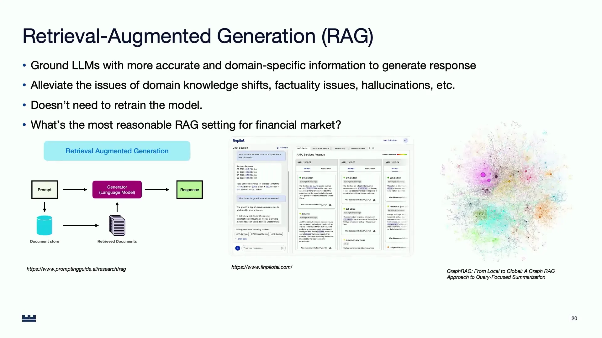
What do you want to trade? FTX 2025-11-08 / SBF case with timestamped balance snapshots
你想交易什么？FTX 2025-11-08 / SBF 案例：带时间戳的余额快照
案例：FTX 崩盘事件中的时序文本证据
- 2025-11-08 FTX 时间线：SBF 等关键人物相关披露
- 余额快照、公告、社交媒体按时间戳对齐
- 展示如何用 LLM 把多源异构信息组织成可推理的事件序列
[26:17 – 26:36]
to inspect different direction of the company to help you get the final conclusions. So as I mentioned that ingest the human prior or our trading prior into large language model is very important. So that's why a lot of times we want to use the RAG system
考察公司的不同方向，帮助你得到最终的结论。因此，正如我提到的，将人类先验或我们的交易先验摄取到大型语言模型中非常重要。所以这就是为什么很多时候我们想要使用rag系统
[26:38 – 26:57]
because the RAG system can regulate the large language model very well and reduce the hallucinations. And there are a lot of public tools and website already provide a very basic financial question answering system. If you have interest, you can just play with it
因为rag系统可以很好的调节大语言模型，减少幻觉。并且有很多公共工具和网站已经提供了非常基本的金融问答系统。如果你有兴趣的话可以直接玩玩
[26:57 – 27:13]
after the talk. My question is, it's really the current most common structure for RAG is the best system to model the relation in stock market. Because you can think about when we retrieve the relevant contacts from the database,
谈话结束后。我的问题是，这确实是 rag 当前最常见的结构，也是对股票市场关系进行建模的最佳系统。因为你可以想一下当我们从数据库中检索相关联系人时，
[27:13 – 27:27]
it will be ordered in a sequential order. But in the stock market, sometimes it's not a time series order or the sequential order because multiple symbols are involved together at the same time. You play as in the graph.
它将按顺序排列。但在股票市场中，有时它不是时间序列顺序或连续顺序，因为多个符号同时涉及在一起。您按照图表中的方式进行游戏。
[27:27 – 27:43]
So maybe like for example, today AMD and Nvidia and also Wacom, they're all like is like dipping right now. So that's not a sequential has a sequential overview of sequential order. So that's why probably we need to consider some other structuring here.
所以也许就像今天的 AMD 和 Nvidia 以及 Wacom 一样，他们现在都在下跌。所以这不是一个顺序的顺序概述。这就是为什么我们可能需要在这里考虑一些其他的结构。
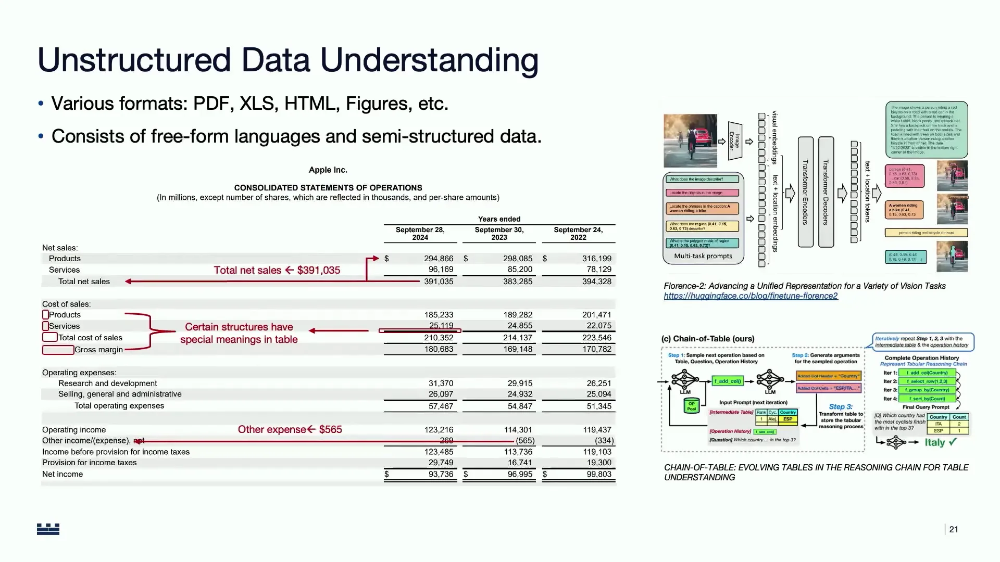
Various formats: PDF, XLS, HTML, Figures, etc. Consist of fine-text language and semi-structured data
格式多样：PDF、XLS、HTML、图表等——由细粒度文本与半结构化数据组成
格式多样性：PDF / XLS / HTML / 图表
- 金融文档既包含细粒度自然语言，也包含半结构化数据
- JSON 风格的表格字段需要被纳入上下文窗口
- OCR + 结构化解析是上游必备环节
[27:43 – 28:06]
Maybe a graph RAG is a choice but it's still an open-ended question. And also about the data, the unstructured data. A lot of information are hidden in the unstructured data. So we needed to be very careful. If you can see that, so that's the SEC filing
也许图 rag 是一种选择，但这仍然是一个开放式问题。还有数据，非结构化数据。非结构化数据中隐藏着大量信息。所以我们需要非常小心。如果你能看到，那就是 SEC 的文件
[28:06 – 28:29]
from Apple Inc last quarter. If you read the table very carefully, we'll also realize that, okay, it's indented in here. Also represent a very subtle information in here. Either represent a sum of the number should be blown a sub categories of a parent category.
上季度来自苹果公司。如果您仔细阅读该表，我们还会发现，好吧，它在这里缩进了。这里也代表了一个非常微妙的信息。任一代表应吹父类别的子类别的数字总和。
[28:29 – 28:44]
So how do we capture those kind of relation between different lines is very important. And how do we capture for example, the bracket in here actually is mean the expense instead of incomes for Apple. Definitely there are a lot of public tools
因此，我们如何捕捉不同线路之间的这种关系非常重要。例如，我们如何捕获，这里的括号实际上是指苹果公司的支出而不是收入。当然有很多公共工具
[28:44 – 29:00]
we can directly use. We can decipher like as a table into XML or we can just use a multimodality model like for example, for instance two, a hugging face already has a very good instruction about how you fine-tune the forums
我们可以直接使用。我们可以将表格解读为 XML，或者我们可以使用多模态模型，例如两个，一张拥抱的脸已经有关于如何微调论坛的非常好的说明
[29:00 – 29:18]
to understand the table. So it always becomes what kind of information you are looking for and what kind of prior you have to use those kind of model. And also you can decompose the table understanding into some like tone of thought as well
以了解该表。所以它总是变成你正在寻找什么样的信息以及你必须使用什么样的模型。你也可以将表格理解分解成一些类似的思维语气
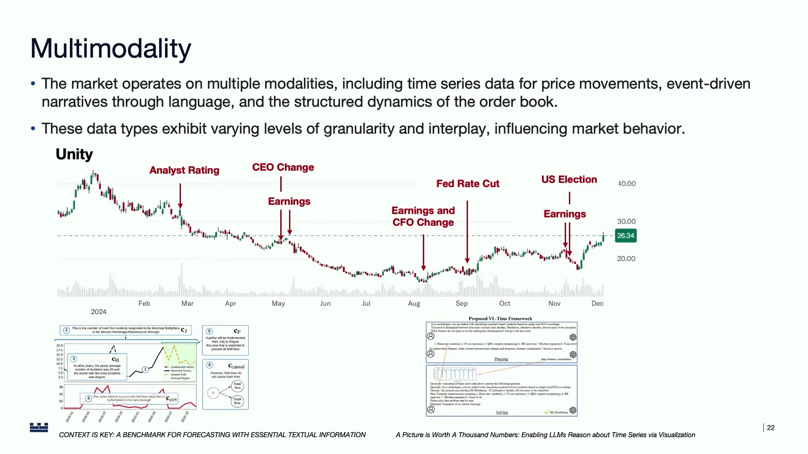
Timeline: Trading Day → Trading Strategy → Trading Hours
时间线：交易日 → 交易策略 → 交易时段
时间维度：交易日 / 策略 / 时段
- 同一信号在不同交易日、交易策略、交易时段上意义不同
- 需要按时间窗口对齐文本与价格行为
[29:18 – 29:39]
to make it easier to understand. And also we have something similar to multimodality model because we in tech industry, we have multimodality which means we have a language can describe your image. And also we have some speech can represent the language. So they are all aligned very well, very easy to align
使其更容易理解。而且我们还有类似于多模态模型的东西，因为我们在科技行业，我们有多模态，这意味着我们有一种语言可以描述你的图像。而且我们还有一些可以代表语音的语言。所以它们都对齐得很好，很容易对齐
[29:39 – 29:58]
because text language and the speech they are exactly matched to each other and the image express some semantic meaning can be expressed by language. So that could be aligned very well. But the challenging for us for quantitative trading
因为文本语言和语音是完全匹配的，而图像所表达的某些语义可以通过语言来表达。这样就可以很好地协调一致。但量化交易对我们来说是一个挑战
[29:58 – 30:17]
is most of the data we have is a time series. The time series doesn't have a specific semantic meaning to describe by language. So when we align the text with the time series data, then it will become some, you will find some like thing like a sparse event driven text described by language
我们拥有的大部分数据都是时间序列。时间序列没有特定的语义可以用语言来描述。所以当我们将文本与时间序列数据对齐时，它就会变成一些，你会发现一些类似由语言描述的稀疏事件驱动文本的东西
[30:17 – 30:33]
and either we are embedded into continuous time series data. Then how do we let those different kind of dimension of the data to interact with each other to give a better prediction model then it's also very kind of challenging here. Like for example, here is a unity stock price.
要么我们被嵌入到连续的时间序列数据中。那么我们如何让这些不同维度的数据相互交互以给出更好的预测模型，那么这里也是非常具有挑战性的。例如，这是统一的股票价格。
[30:34 – 30:50]
So you can see that a lot of different kinds of events has a factor of stock price besides the technical signal, say O change, say F O change and the favorites cost and also election results. There are some public papers
所以你可以看到，除了技术信号之外，很多不同类型的事件都有股票价格的因素，比如O变化，比如F O变化以及热门成本和选举结果。有一些公开的论文
[30:50 – 31:08]
already explore this direction like either way or summarize some text to describe there, give a summary about the past behavior of the time series and they use the multimodality model to understand that, okay, how does the language affects the time series model. So those are two paper are pretty interesting.
已经探索了这个方向，或者总结了一些文本来描述，总结了时间序列过去的行为，他们使用多模态模型来理解，好吧，语言如何影响时间序列模型。所以这两篇论文非常有趣。
[31:08 – 31:28]
They're similar to ICLR this year. So it's quite a new direction to study at a current point. And also another challenging thing for time series understanding or the textual understanding is first, there is no a really good foundation model for time series.
它们与今年的 iClear 类似。因此，目前这是一个相当新的研究方向。对于时间序列理解或文本理解来说，另一个具有挑战性的事情是，首先，时间序列没有一个真正好的基础模型。
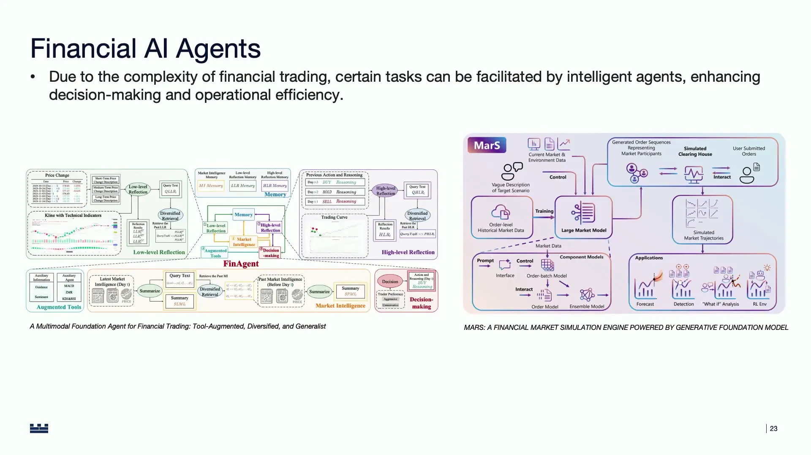
Same trading-day timeline view
同一交易日时间线视图
[31:28 – 31:45]
And also second, there is no really good multimodality model to combine both time series and the language. So that's why I make the task is still on exported at the current point. At this end, I would say similar
其次，没有真正好的多模态模型来结合时间序列和语言。这就是为什么我让任务在当前点仍然处于导出状态。最后我想说的是类似的
[31:45 – 32:01]
to a lot of tech company, I think the ultimate goal is we want to finance companies who want to build some financial agent to fully facilitate a certain type of the goal. Like for example, some traders, they don't really go that the writings are called
对于很多科技公司来说，我认为最终的目标是我们想要为那些想要建立一些金融代理的公司提供资金，以充分促进某种类型的目标。例如，有些交易者并不真正认为这些著作被称为
[32:01 – 32:15]
but they want to retrieve certain types or events. For example, what's the delivery date for Rivian in the next quarter, right? Either he can search on Google and social or different sources. We can also implement some AI agent
但他们想要检索某些类型或事件。例如，riverlines 下个季度的交货日期是多少？他可以在谷歌和社交媒体或其他来源上进行搜索。我们还可以实现一些AI代理
[32:15 – 32:28]
with a large model to search all the result within the database we have. So you can improve the efficiency to find out the really useful information because in the trading industry, time is really important.
使用大型模型来搜索我们拥有的数据库中的所有结果。这样您就可以提高效率来找到真正有用的信息，因为在交易行业中，时间非常重要。
Refactorize: possible reasons (Limited data, model capacity, imperceptible prompts, absence of grounding, …)
Refactorize：可能原因（数据有限、模型容量、提示难感知、缺乏 grounding 等）
Refactorize：重新组织数据与上下文
- 可能原因：数据有限、模型容量不足、提示难以感知、缺乏 grounding
- 本质上是把输入重组成更适合 LLM 消化的形态
[32:28 – 32:44]
If you have the time lead compared with your competitors, then that's the opportunity you can make the profits. And the similar as the machine learning community, we have a similar challenge, other challenge like hallucination is,
如果您与竞争对手相比拥有时间领先优势，那么这就是您赚取利润的机会。与机器学习社区类似，我们也面临着类似的挑战，其他挑战如幻觉是，
[32:44 – 33:03]
as I mentioned that we always want to use our trading logics or some prior to regulate the outputs for large new model. So we don't want the hallucination to happen as less as possible. And also, we also think the non-context
正如我提到的，我们总是希望使用我们的交易逻辑或一些之前的逻辑来调节大型新模型的输出。所以我们不希望幻觉的发生越少越好。而且，我们还认为非上下文
[33:03 – 33:18]
understanding challenge because in most of the documents, for example, as the SEC filings and the earnings usually consist of a lot of the pages or you have thousands of pages, how do you find the key information
理解上的挑战，因为在大多数文件中，例如，美国证券交易委员会的文件和收益通常由很多页组成，或者你有数千页，你如何找到关键信息
Q & A (cityscape background)
Q & A（城市景观背景）
[33:18 – 33:39]
within those kinds of long documents is also a very key important example component in the trading business. Okay, I think that's like the overview about what kind of financial textual data we have and how do we think about large language model
在这些类型的长文档中也是贸易业务中非常关键的重要示例组成部分。好的，我认为这就像我们拥有什么样的金融文本数据以及我们如何看待大型语言模型的概述
[33:39 – 33:44]
can play a role in financial business, especially trading business.
可以在金融业务，尤其是贸易业务中发挥作用。
[33:46 – 33:54]
Yeah, and we still have time and we can take some like a question
是的，我们还有时间，我们可以回答一些问题
[33:56 – 34:13]
about like the slides first. Yes. So you mentioned how time, so yeah, just going back, you mentioned how time is extremely important when executing trades or like when making strategies.
首先就像幻灯片一样。是的。所以你提到了时间，所以是的，回顾一下，你提到时间在执行交易或制定策略时非常重要。
[34:13 – 34:26]
So how do you guys sort of create a balance between latency and precision and accuracy? Okay, so it depends on the business. Okay, if the business is trying to have some very latency sensitive trading business,
那么你们如何在延迟和精度和准确度之间取得平衡呢？好吧，这取决于业务。好的，如果企业正在尝试进行一些对延迟非常敏感的交易业务，
[34:26 – 34:46]
then we will care about the latency. But still, we need to pay attention to the precision because as I mentioned, precision is most of the important because this means our offer is correct or wrong, right? If it's wrong, then we will lose the money. If we don't trade if the offer is wrong,
那么我们就会关心延迟。但是，我们仍然需要注意精度，因为正如我提到的，精度是最重要的，因为这意味着我们的报价是正确还是错误，对吧？如果错了，我们就会损失金钱。如果报价错误我们就不交易
[34:46 – 34:57]
wait for us, we don't trade if the offer is wrong, right? So the precision is still important because if the precision is not good, then there's nothing too important for latency, right?
等等我们，如果报价错误我们不会交易，对吗？所以精度仍然很重要，因为如果精度不好，那么延迟就没有什么太重要了，对吧？
[35:00 – 35:08]
Can you hear me? No. Hello. Yeah, it works well, thank you. Thank you so much. It was wide and very interesting.
你能听到我吗？不，你好。是的，效果很好，谢谢。太感谢了。它很宽而且非常有趣。
[35:08 – 35:21]
You mentioned at some point that time series foundational models are not good enough for your use case. So I'm from AWS Central Econ and we have open-sourced Chronos and Google has open-sourced Time FM
您在某个时候提到时间序列基础模型对于您的用例来说不够好。我来自 AWS Central Econ，我们有开源的 Chronos，谷歌也有开源的 Time FM
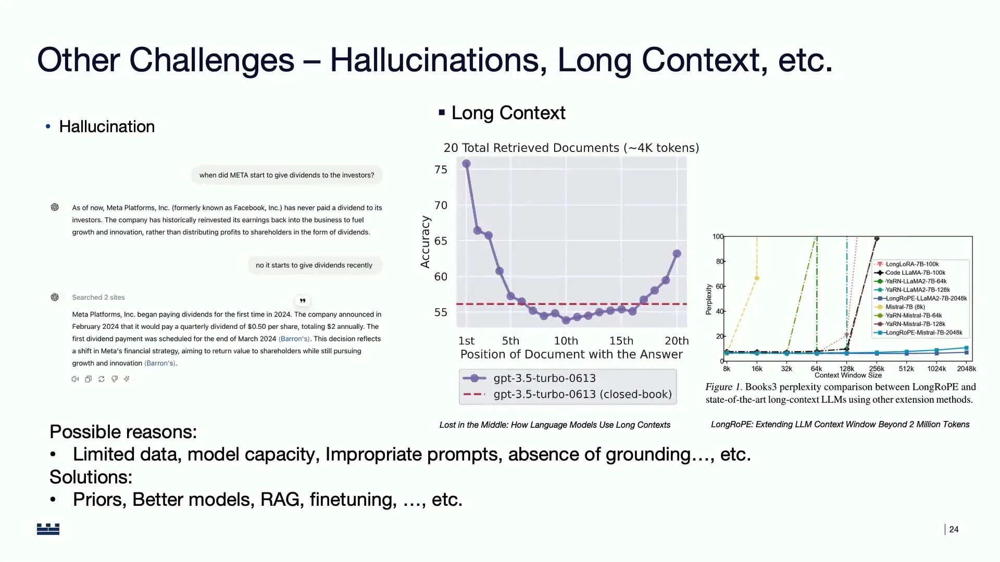
Refactorize bullets repeated
Refactorize 要点重复
长上下文能力与局限
- LLM 长上下文窗口显著扩大，但仍受限于成本与注意力
- 在金融长文档场景下需要分层摘要与检索
[35:21 – 35:37]
and we have multiple of those. Your view on the foundational time series model, what is missing basically? What do you think we can improve there? Okay, so the question is, because I made a claim that the time series model
我们有很多这样的。您对基本时间序列模型的看法，基本上缺少什么？您认为我们可以在哪些方面进行改进？好的，所以问题是，因为我声称时间序列模型
[35:37 – 35:51]
is not very good. I think my view, because I studied NLP before, right? Because the reason why NLP model can be so successful because it's a language, they share the same distribution and the characteristic across different tasks and the different domains, right?
不太好。我想我的看法，因为我之前学过nlp，对吧？因为 nlp 模型之所以能够如此成功，是因为它是一种语言，它们在不同的任务和不同的领域之间具有相同的分布和特征，对吗？
[35:51 – 36:07]
But in time series, their tool is very different. They have a huge domain shift across different time series. For example, electricity and weather, right? And versus our finance, they have different conditions, they have different granularity. I mean, for example, for our finance,
但在时间序列中，他们的工具非常不同。他们在不同的时间序列上有巨大的领域转变。例如，电力和天气，对吧？与我们的财务相比，他们有不同的条件，他们有不同的粒度。我的意思是，例如，对于我们的财务来说，
[36:07 – 36:19]
we have a millisecond political horizon, we have even a very long-term horizon. So that's make like the building a time series of financial model across different domain is quite a challenge. So how do you capture the different relation
我们有毫秒级的政治视野，甚至有很长远的视野。因此，跨不同领域建立时间序列的财务模型是一个相当大的挑战。那么如何捕捉不同的关系
[36:19 – 36:33]
but still learn the mutual information within the financial model? Thank you. Yeah, thank you. It's okay, like we still have the slides show here. Hey, I'm Chris Tolz, I'm the Common Crawl Foundation.
但仍然学习财务模型中的相互信息？谢谢。是的，谢谢。没关系，就像我们这里还有幻灯片一样。嘿，我是 Chris Tolz，我是 Common Crawl 基金会。
[36:33 – 36:45]
I'm curious if you can comment on whether you're using generative AI to do any of these things as opposed to sort of a classical machine learning approach. And of that, are you using, if you could comment on whether you guys are using sort of public models
我很好奇您是否可以评论一下您是否使用生成式人工智能来完成这些事情，而不是使用经典的机器学习方法。其中，您是否正在使用，是否可以评论一下你们是否正在使用某种公共模型
[36:45 – 36:57]
or whether you've had to design your own things? And if so, what are your thoughts on a base level of training data before you get to the financial data? Do you have to train your models up on sort of to a certain baseline
或者你是否必须设计自己的东西？如果是这样，在获取财务数据之前，您对基础训练数据有何想法？你是否必须将你的模型训练到一定的基线
[36:57 – 37:13]
before you get to industry specific? Yeah, so first is, the answer is, as long as the model are useful, we will also consider that. But in terms of some, because building a large model from scratch
在了解具体行业之前？是的，所以首先，答案是，只要模型有用，我们也会考虑。但就某些而言，因为从头开始构建大型模型
[37:13 – 37:27]
is really costly, right? That's not our priority for a company like us because we are not like Google or Meta that we try to release the model to the public so everyone can use. So for us, we will have some estimation to say,
确实很贵吧？对于像我们这样的公司来说，这不是我们的首要任务，因为我们不像 Google 或 META 那样试图向公众发布模型，以便每个人都可以使用。所以对我们来说，我们会有一些估计要说，
[37:27 – 37:41]
okay, whether those models are really indeed useful for us. Indeed, there are some actual ash we can capture so we can make the advantage on the market. So that's the first step we need to verify. Then we will consider, okay, maybe whether we can just directly use a public model
好吧，这些模型是否真的对我们有用。事实上，我们可以捕获一些实际的火山灰，这样我们就可以在市场上取得优势。这是我们需要验证的第一步。然后我们会考虑，好吧，也许我们是否可以直接使用公共模型
[37:41 – 37:55]
or something like that. We are going to build some proprietary model by ourselves. Thank you. Hello, thank you very much for the talk. It was very interesting and comprehensive and I think it gives a great lay of the land.
或类似的东西。我们将自己构建一些专有模型。谢谢。您好，非常感谢您的演讲。它非常有趣且全面，我认为它提供了一个很好的背景。
Long Context capability with chart
长上下文能力（带图表）
[37:55 – 38:11]
One question I had, you mentioned a couple of times, this kind of difference between what you might think of is Beta and Smart Beta and Alpha. I think you mentioned, which I totally agree with, that if you try to train kind of end to end to making money or optimizing sharp ratio,
我有一个问题，你提到过几次，你可能想到的这种差异是 Beta、Smart Beta 和 Alpha。我想你提到过，我完全同意，如果你尝试进行端到端的训练来赚钱或优化夏普比率，
[38:11 – 38:26]
you're going to overfit because of signal to noise. On the other hand, if you go too far the other way, it's just kind of generic research, right? Which you can buy, it's kind of a commodity out there. So in practice, how do you balance that line, right? Ultimately, you guys are not selling research, right?
由于信噪比，你会过度拟合。另一方面，如果你走得太远，这只是一种通用研究，对吧？你可以购买它，它是一种商品。那么在实践中，你如何平衡这条线，对吗？归根结底，你们不是在出售研究成果，对吧？
[38:26 – 38:38]
You're trading on this. Ultimately, it has to be profitable. It has to move the bottom line for different trading groups. On the other hand, you don't want to necessarily contaminate this kind of generalized
你正在以此进行交易。最终，它必须能够盈利。它必须改变不同交易集团的底线。另一方面，你也不想必然污染这种普遍化的东西。
[38:38 – 38:49]
kind of feature engineering layer with the kind of Alpha or the proprietary different types of downstream trading that different teams are doing. So how do you develop that interface? Like, is it just text?
具有 Alpha 类型的特征工程层或不同团队正在进行的专有不同类型的下游交易。那么如何开发该界面呢？比如，它只是文字吗？
[38:49 – 39:02]
Is it kind of generic features? And then downstream teams can use and plug into their domain specific trading. And also when you're doing that, how do you include, you mentioned a few times, things around uncertainty and distributions
这是一种通用功能吗？然后下游团队可以使用并插入其特定领域的交易。当你这样做时，你如何包括你提到过几次的关于不确定性和分布的事情
[39:02 – 39:15]
and things like that. How do you include that uncertainty so that the teams know that this isn't just a point estimate of the stock's going to go up or going to go down, but maybe a multidimensional distribution that conditional on this,
诸如此类的事情。如何包含这种不确定性，以便团队知道这不仅仅是对股票将上涨或下跌的点估计，而且可能是以此为条件的多维分布，
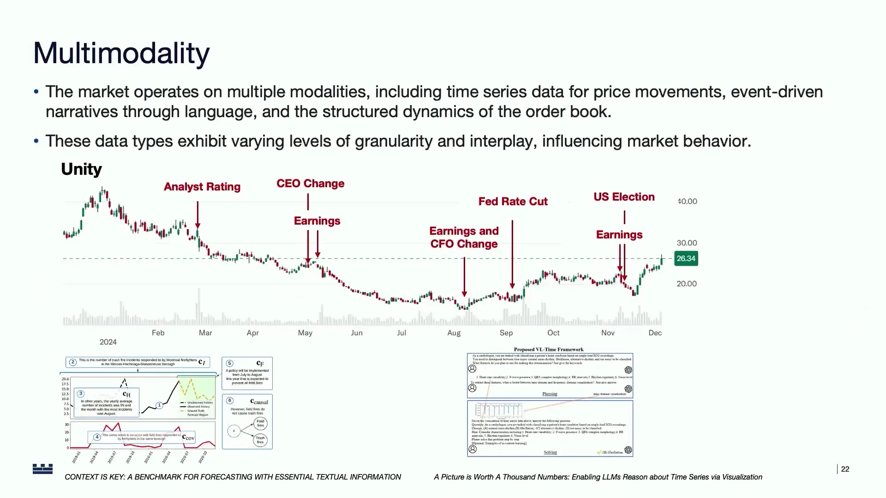
Various formats: PDF, XLS, HTML, Figures — JSON-like semi-structured sample
格式多样：PDF、XLS、HTML、图表——类 JSON 的半结构化样本
[39:15 – 39:29]
we think that the posterior is 60, 40 this way, but conditioned a different way. Those kind of higher moments of risk and volatility and skedacity and things like that. Okay, thanks for the question. There are a lot of questions.
我们认为后验是 60、40，但条件不同。那些风险、波动性和不确定性等更高的时刻。好的，谢谢你的提问。有很多问题。
[39:29 – 39:41]
So the first one, I think you're asking about the trade-off between some traditional general pipeline for Alpha research or something like a more advanced techniques, right? So the answer is as long as they are useful, we are happy about that.
所以第一个，我想你是在问一些用于 Alpha 研究的传统通用流程与更先进技术之类的东西之间的权衡，对吧？所以答案是只要它们有用，我们就很高兴。
[39:41 – 39:57]
Because like for some general techniques, they are very easy to interpretable, right? So that's also a very important fact we care about in quantitative trading. And meanwhile, as I mentioned that, because the whole market is evolving really fast,
因为就像一些通用技术一样，它们很容易解释，对吗？所以这也是我们在量化交易中关心的一个非常重要的事实。与此同时，正如我提到的，因为整个市场发展得非常快，
[39:57 – 40:14]
if we want to take the manager on the market, we need a more advanced techniques to find the actual edge on top of some general or some traditional methodologies, right? So, which means both way, Citadel Securities will, I think we,
如果我们想把经理带入市场，我们需要更先进的技术来找到一些通用或传统方法之上的实际优势，对吧？因此，这意味着双向，我认为 Citadel 证券将，
[40:14 – 40:28]
and also some other company probably are invested in that, both directions. And the second one about the interface, how do we design the interface? I think we, as I mentioned that, we have the very strong prior
还有一些其他公司可能在这两个方向上进行投资。第二个关于界面，我们如何设计界面？我认为，正如我所提到的，我们拥有非常强大的先验知识
[40:28 – 40:44]
about to understand the trading logics and also the business setup first, right? We need to understand the logics. We need to communicate with the downstream users to discuss, okay, what is the correct setup for them, right? We are not only just feed a direct signal to them.
首先要了解交易逻辑和业务设置，对吗？我们需要理解其中的逻辑。我们需要和下游用户沟通讨论，好吧，对他们来说正确的设置是什么，对吗？我们不仅向他们提供直接信号。
[40:44 – 40:55]
They don't know what the signal is. We will discuss, okay, what kind of signal they are looking for. They can facilitate the biolarge language model. Do they need to find some certain events or they just need to use the final offer?
他们不知道信号是什么。好吧，我们将讨论他们正在寻找什么样的信号。它们可以促进生物大语言模型的发展。他们是否需要查找某些特定事件，或者只需要使用最终报价？
[40:55 – 41:11]
So we're all negotiated with, oh, sorry, communicated with them to find out the best format or best interface for them to facilitate the trading business. Okay, thank you. Yeah, thank you. Hi, thank you very much for the talk.
所以我们都跟他们协商哦,对不起,跟他们沟通,找出他们最好的格式或者最好的界面,方便他们进行交易业务。好的，谢谢。是的，谢谢。你好，非常感谢你的谈话。
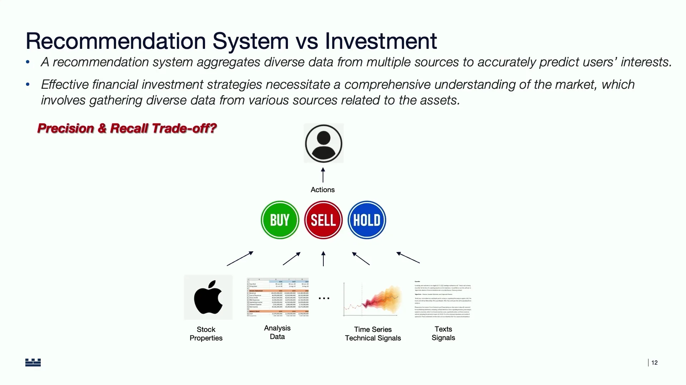
Same format-diversity slide repeated
同一「格式多样」页重复
[41:11 – 41:28]
It was very interesting. Thank you. I really like the slide on the compare and contrasting financial versus general data domain. How would you think about this in an agentic framework? For example, general data domain slash tech companies might think about booking agents,
这很有趣。谢谢。我真的很喜欢这张关于比较和对比金融数据与一般数据领域的幻灯片。在代理框架中你会如何看待这个问题？例如，一般数据领域斜线科技公司可能会考虑预订代理，
[41:28 – 41:43]
creating booking agents, versus like in your trading versus financial domain, what are some peculiarities, like compare and contrast in terms of how you think about agentic domains where it would be useful? Yeah, so from my view, I mean,
创建预订代理，与您的交易领域和金融领域相比，有哪些特点，例如您如何看待代理领域有用的比较和对比？是的，所以从我的角度来看，我的意思是，
[41:43 – 41:54]
those two slides are just like my interpretation about their trading business. It's not always correct, right? But so that's my feeling because I'm from general human and community. My view is there are always some similarity
这两张幻灯片就像我对他们的交易业务的解释。它并不总是正确的，对吧？但这就是我的感觉，因为我来自普通人类和社区。我的观点是总有一些相似之处
[41:54 – 42:10]
or some like advanced techniques that we can borrow from the machine learning community and also we can reinvent them to adapt to our specific business, right? So that's why, for my view, is a lot of the techniques from recommendation system
或者一些像我们可以从机器学习社区借用的先进技术，我们也可以重新发明它们以适应我们的特定业务，对吧？所以，在我看来，这就是为什么推荐系统中有很多技术
[42:10 – 42:26]
are very similar to our trading business because we're just collecting data and try to create a market. So the market is our only target, right? So that's why a lot of some general component or techniques we can just directly apply to our business
与我们的交易业务非常相似，因为我们只是收集数据并尝试创建一个市场。所以市场是我们唯一的目标，对吗？这就是为什么很多通用组件或技术我们可以直接应用于我们的业务
[42:26 – 42:40]
because, you know, the AI community is growing so fast and there has been very fast iteration. A lot of very new like techniques are very interesting for us. Yeah, we're trying to. Just a quick one.
因为，你知道，人工智能社区发展如此之快，迭代速度非常快。许多非常新的技术对我们来说非常有趣。是的，我们正在努力。只是快一点。
[42:40 – 42:54]
What are some of the maybe applications that you see specific to trading? Sorry. Or would agentic frameworks? Oh, for the agent framework? So, sorry, your question is about the computation
您认为特定于交易的应用程序有哪些？对不起。或者代理框架会吗？哦，对于代理框架？所以，抱歉，你的问题是关于计算的
[42:54 – 43:03]
or complication. So, for example, tech company would use it for booking. Okay, yeah. Booking tickets. Yeah. For, in the case of trading,
或并发症。例如，科技公司会使用它进行预订。好吧，是的。订票。是的。因为，就交易而言，
[43:03 – 43:14]
what are some of the similar. Okay, yeah, so that's a good question. So you're saying like, okay, in tech company, like for example, Airbnb, right? They are using like an AI agent to find out like it's a booking and information, right?
有哪些类似的。好吧，是的，这是一个好问题。所以你的意思是，好吧，在科技公司，比如 Airbnb，对吧？他们就像人工智能代理一样来查找预订和信息，对吧？
[43:14 – 43:27]
So the first step for that is to still search the information within the database to match the user interest, right? Similar for us, as I mentioned that, okay, if the trader want to find a very specific information, for example,
因此，第一步仍然是在数据库中搜索信息以匹配用户兴趣，对吧？对于我们来说类似，正如我提到的，好吧，如果交易者想要找到非常具体的信息，例如，
[43:27 – 43:38]
what's the delivery rate for Rivian in the next quarter? Those kind of information has been already stored in the database. So our agent is also trying to find all those kind of information in the database and then feed it back to the traders.
riverlines 下一季度的交付率是多少？这些信息已经存储在数据库中。因此，我们的代理也在尝试在数据库中查找所有此类信息，然后将其反馈给交易者。
[43:38 – 43:49]
Okay, thank you. Hi, Dianqi. Thanks for sharing. So actually, I'm also going to be in a full-time quantitative research next week, exactly after this conference.
好的，谢谢。嗨，典琪。感谢分享。所以实际上，我也将在下周，就在这次会议之后，进行全职定量研究。
Title slide repeat
标题页重复
RAG：负责任地为 LLM 接上领域知识
- RAG 可缓解领域知识漂移、事实性问题与幻觉
- 无需重新训练模型即可更新知识
- Q&A：金融市场最负责任的 RAG 设置仍开放（数据新鲜度、来源可信度、citation、监管合规等）
[43:49 – 44:00]
Congratulations. Thank you. It's been a good time for me to hear your shareings and thanks a lot for the chat. So my question regarding the long context challenge you mentioned at your final page,
恭喜。谢谢。我很高兴听到您的分享，非常感谢您的聊天。所以我的问题是关于你在最后一页提到的长上下文挑战，
[44:00 – 44:15]
as you just mentioned, definitely for example, earnings call is kind of definitely a reward long context. And if you do, for example, sentiment analysis, and if you do that, for example, paRAGraph, you might get, you know, obtain different results.
正如您刚才提到的，例如，财报电话会议绝对是一个长期奖励的背景。如果你做，例如，情感分析，如果你这样做，例如，paragraph，你可能会得到，你知道，获得不同的结果。
[44:15 – 44:29]
And also some subtle language might exist in this year's earnings call, but not in previous ones. And so it's quite hard for you to detect them and do sentiment analysis or other related tasks. So do you mind sharing any general solutions to them?
今年的财报电话会议中可能存在一些微妙的语言，但在以前的电话会议中则没有。因此，您很难检测到它们并进行情绪分析或其他相关任务。那么您介意分享一些通用的解决方案吗？
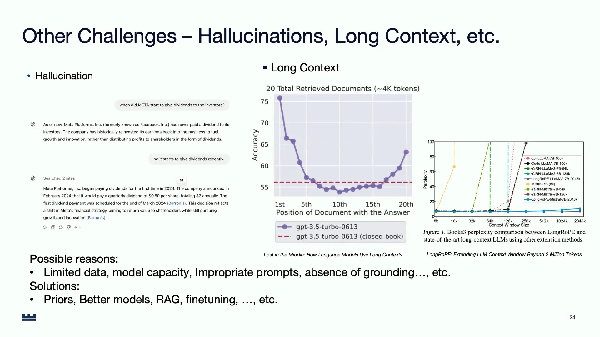
Refactorize bullets, repeated for emphasis
Refactorize 要点再次强调
[44:29 – 44:45]
Okay, so I think the solution is also similar to the general solution in long context understanding. So from my knowledge, okay, so I feel like long context understanding, there are two directions right now. So first one is we feed an entire document
好的，所以我认为该解决方案也类似于长上下文理解中的通用解决方案。据我所知，好吧，我觉得需要长期的上下文理解，现在有两个方向。所以第一个是我们提供整个文档
[44:45 – 44:58]
into the large language model and one large language model to handle it automatically end to end, right? So we don't need to interface like interference like the task for like a model, right? And the second direction is we decompose
进入大语言模型和一个大语言模型来自动端到端地处理它，对吧？所以我们不需要像模型那样进行像任务那样的干扰，对吧？第二个方向是我们分解
[44:58 – 45:15]
the long context into a few different steps, either by AI agent to find the answer step by step and find the precise information, right? So that depends on what kind of like the technique you are at, right? So if we want to really want to large language model
将长上下文分解成几个不同的步骤，要么由AI代理一步步找到答案并找到精确的信息，对吗？所以这取决于你所掌握的技术，对吗？所以如果我们真的想要大型语言模型
[45:15 – 45:31]
to handle those, you know, information search end to end by a unified large language model, then that's also kind of like the direction you can pursue, right? But if you want to inject your prior or some certain kind of like the search information
通过统一的大型语言模型来处理端到端的信息搜索，那么这也是您可以追求的方向，对吧？但是如果你想注入你之前的或某种特定类型的搜索信息
[45:31 – 45:45]
you want to do, it's better still to decompose the task. Like for example, what kind of information you are looking for? Because that's the key part, right? Because you have been playing with a large language model. You know that for prompt engineering is very important
你想做的事情，最好还是分解任务。例如，您正在寻找什么样的信息？因为那是关键部分，对吗？因为你一直在玩大型语言模型。你知道对于快速工程来说非常重要
[45:45 – 45:58]
because most of the time is people, they don't know what kind of questions they're going to ask, right? If you are not sure about what the task you are studying, then LLM can also cannot understand you. So that's why I still like that.
因为大多数时候是人，他们不知道自己要问什么样的问题，对吧？如果你不确定你正在学习的任务是什么，那么l l m也可能无法理解你。所以这就是为什么我仍然喜欢它。
[45:58 – 46:17]
I feel like it's understand the data is mostly important. Great, thanks for sharing. Hi, thanks for the overview. I have a question about information relevance. Earlier in your talk, you mentioned that given a security might look at 10K filing suites
我觉得理解数据是最重要的。太好了，谢谢分享。您好，感谢您的概述。我有一个关于信息相关性的问题。在您演讲的早些时候，您提到给定证券可能会考虑 10K 归档套件
[46:17 – 46:40]
and parking lot images and what wrong? Oh, I think that says some company. Okay, not you, some people out there. How do you identify which are the information which is relevant for each security? Does it come from empirical pattern matching observations?
和停车场图像又有什么问题呢？哦，我想有些公司是这么说的。好吧，不是你，而是外面的一些人。您如何识别哪些信息与每种证券相关？它来自经验模式匹配观察吗？
[46:40 – 46:59]
Does it come from domain experts, something else? Yeah, I would say most are coming from our domain specific knowledge because we know what kind of information we are looking for based on our experience, right? It's probably not fully always correct,
它来自领域专家还是其他什么？是的，我想说大多数都来自我们特定领域的知识，因为我们根据我们的经验知道我们正在寻找什么样的信息，对吗？它可能并不完全正确，
[46:59 – 47:01]
but that's our prior, right?
但这是我们的先决条件，对吧？
[47:03 – 47:22]
So that's why we carry over those kind of prior to find the information we want from SEC filing. If you look at SEC filing or earnings, you will find most of the sentence are meaningless. They're just, they're very verbose about repeating, talking about something.
这就是为什么我们会继承这些先决条件，从 SEC 备案中找到我们想要的信息。如果你看一下 SEC 的文件或财报，你会发现大部分句子都是毫无意义的。他们只是，他们对于重复、谈论某事非常冗长。
[47:22 – 47:38]
So those kind of, how do we understand like those are not useful is because we are reading a lot of SEC filing in the earnings transcript, right? So we know that, okay, those are just like verbose sentence where it has no prediction power on the topic we want to predict.
那么，我们如何理解那些没有用的东西是因为我们在收益记录中阅读了很多 SEC 的文件，对吗？所以我们知道，好吧，这些就像冗长的句子，它对我们想要预测的主题没有预测能力。
[47:40 – 47:40]
Thank you.
谢谢。
[47:43 – 47:58]
Do you want to take some water first because you talked to. Sorry, can you come closer because. Can you hear me? Let me shoot you from the Capital One Financial Group. So I do have a question about the unstructured data on your slides.
你要先喝点水吗，因为你跟我们说话了。抱歉，你能靠近点吗，因为。你能听到我吗？让我从第一资本金融集团拍摄你。所以我确实对幻灯片上的非结构化数据有疑问。
Structured + unstructured data recap
结构化 + 非结构化数据回顾
Various formats: PDF, XLS, HTML, Figures — closing slide
格式多样：PDF、XLS、HTML、图表——收尾页
[47:58 – 48:20]
So, you know, in, yes, I'm not in this one. Then the one was table like financial report. Unstructured data. Oh, unstructured data. Yes. As we know, like every digit in this document means money.
所以，你知道，是的，我不参与其中。然后是财务报告之类的表格。非结构化数据。哦，非结构化数据。是的。众所周知，这份文件中的每个数字都意味着金钱。
[48:20 – 48:44]
So we wanted to have like a high kind of position. Let's say your multimodal, multimodal model, right? You want to transfer this document to a numerical vector and that you train maybe what fine tune or train like, like when you model. So how do you manage your nursing,
所以我们想拥有一个很高的职位。比方说你的多式联运、多式联运模式，对吧？您希望将此文档转换为数值向量，并且您可以进行微调或训练，就像建模时一样。那么你如何管理你的护理，
[48:45 – 49:08]
how you do this kind of feature engineering to maintain very high precision about or quality of input data. When you change them into a numerical vector and then represent a numerical vector has like a high precision information about a source of.
如何进行这种特征工程以保持输入数据的高精度或质量。当你把它们变成一个数值向量，然后表示一个数值向量就拥有了关于某个来源的高精度信息。
[49:08 – 49:26]
Okay, so I think the question can be simplified into, okay, so when we interpret the information from table of data or figure the one key important is how do we keep the fidelity of the numbers presented in the image, right? Okay, so there are a couple of ways.
好的，所以我认为这个问题可以简化为，好的，所以当我们解释数据表中的信息或计算数据时，重要的一个关键是我们如何保持图像中呈现的数字的保真度，对吗？好的，有几种方法。
[49:26 – 49:40]
There are also like a very similar techniques in the AI community. So you can just use multi-modality model to get the number. So the multi-modality model will take the image as an input and output tags to,
人工智能社区中也有类似的技术。所以你可以使用多模态模型来获取数字。因此多模态模型将以图像作为输入和输出标签，
[49:40 – 50:01]
for your output, right? And then another way is the model has multiple stage is that, okay, you detect what kinds of region you want to capture the information and then use the OCR or some vision model to pass the information from the number, right?
为了你的输出，对吗？另一种方法是模型具有多个阶段，好吧，您检测要捕获信息的类型的区域，然后使用 ocr 或某些视觉模型来传递数字中的信息，对吗？
[50:01 – 50:13]
So if you have a very high precision requirements about the number output, I would present the second one because it's more controllable. And also by OCR, it's not, it don't have a characterization issue, right?
所以如果你对数字输出的精度要求非常高，我会推荐第二个，因为它更可控。而且通过 ocr，它不存在特征问题，对吧？
[50:13 – 50:28]
I see, maybe I didn't ask clear. Like for example, if I want to kind of like feature engineering, right, to a large language model by using information in this document, let's say the company last year, we have income in this number.
我明白了，可能是我没问清楚。举例来说，如果我想通过使用本文档中的信息来进行特征工程，对吧，到一个大型语言模型，假设公司去年的收入是这个数字。
[50:28 – 50:41]
So how you make this kind of information, let's say I want to use this kind of information to fine tune a large language model. So how can we, is any nursing on the end another, can we make this very accurate
那么如何制作这种信息呢，比如说我想用这种信息来微调一个大的语言模型。那么，我们如何才能做到这一点非常准确？
[50:41 – 51:03]
and also in a correct way, high quality? Yes, just something like that. Okay, so I think if you turn in terms of like a high quality data to fine tune the large language model, the most easiest way, but also most expensive way is you let humans to annotate the data, right?
并且以正确的方式，高质量？是的，就是这样。好吧，所以我认为如果你用高质量的数据来微调大型语言模型，最简单的方法，但也是最昂贵的方法是让人类来注释数据，对吧？
[51:03 – 51:18]
And then you can fine tune the model, right? But most of the time we have limited budgets or has some constraints, so we cannot help people to collect the data. So that's why I think it's better, you can use some of the synthetic data strategy
然后你可以微调模型，对吗？但大多数时候我们的预算有限或者有一些限制，所以我们无法帮助人们收集数据。所以这就是为什么我认为更好，你可以使用一些合成数据策略
[51:18 – 51:32]
to generate the data. Like for example, if we want a high quality data, which means the data needs a high precision, so maybe you can use the OCR pipeline to extract the data first and then formalize them into some language,
生成数据。例如，如果我们想要高质量的数据，这意味着数据需要高精度，所以也许你可以使用 ocr 管道先提取数据，然后将它们形式化为某种语言，
[51:32 – 51:50]
then you fine tune the large language model or the vision-language (VLM) model. I see, thank you so much for having us. Okay, yeah, cool. Hi, thank you for the talk today. I have one primary question, because you mentioned like in this specific application
然后微调大语言模型或视觉语言 (VLM) 模型。我明白了，非常感谢您邀请我们。好吧，是的，酷。你好，谢谢你今天的演讲。我有一个主要问题，因为你在这个特定的应用程序中提到过
[51:50 – 52:13]
in the finance industry and for example, company, for financial technology companies, you're not in the main focus of trying to develop a finance oriented module rather than using some published models. So in that sense, does the large language model here
在金融行业，例如，对于金融技术公司来说，您的主要重点不是尝试开发面向金融的模块，而是使用一些已发布的模型。所以从这个意义上说，这里的大语言模型是否
[52:13 – 52:33]
only use for augmentation to the data set rather than coming up with a fresh model to specifically design for the financial market? Okay, so as I mentioned, there is a cost and innovation trade off for us, right? Because we are not a Google or Meta
仅用于增强数据集，而不是提出专门为金融市场设计的新模型？好的，正如我提到的，我们需要在成本和创新之间进行权衡，对吧？因为我们不是 Google 或 META
[52:33 – 52:50]
where our goal is not to release some financial model to the public. So that's why in terms of some cost, we need to have some very strong prior first so that our trading business is regulated very well, right? So that's why we need to test,
我们的目标不是向公众发布某些财务模型。所以这就是为什么在一些成本方面，我们首先需要有一些非常强大的先决条件，以便我们的贸易业务得到很好的监管，对吗？这就是为什么我们需要测试
[52:50 – 53:07]
okay, whether this direction is reliable. If it's indeed really reliable, then probably we will consider some like, how do we build some new components on top of that or some iterative to more specific thing, right? But they're like, for example, Bloomberg
好吧，这个方向是否可靠。如果它确实非常可靠，那么我们可能会考虑一些类似的问题，如何在此基础上构建一些新组件或对更具体的事物进行迭代，对吗？但他们就像，例如，彭博社
[53:07 – 53:27]
has released their own financial GPT, right? And also some other company has their own proprietary data you can access with respect to finance. So that's a really good direction with, I mean, we or some other company or you can start with to say, okay, but indeed it can bring actual benefits
已经发布了自己的金融GPT了吧？另外，其他一些公司也拥有自己的财务方面的专有数据，您可以访问这些数据。所以这是一个非常好的方向，我的意思是，我们或其他一些公司或者你可以首先说，好吧，但它确实可以带来实际的好处
[53:27 – 53:46]
to the task you are focusing on. I would say always about what kind of task you are trying to target is very general question, right? I have another follow-up question, cause like, for example, the data you are presenting in this slides and you're saying you're using
到您正在关注的任务。我总是会说，你想要完成什么样的任务是一个非常普遍的问题，对吧？我还有另一个后续问题，例如，您在这张幻灯片中呈现的数据，并且您说您正在使用
[53:46 – 54:03]
large-language model to extract actual data as I was asking the previous question, you are using the large-language models to extract probably graph data or text data to augment data set to probably be used to enhance a current model rather than developing new.
正如我问上一个问题一样，您正在使用大语言模型来提取可能的图形数据或文本数据以扩充数据集，以便可能用于增强当前模型而不是开发新模型。
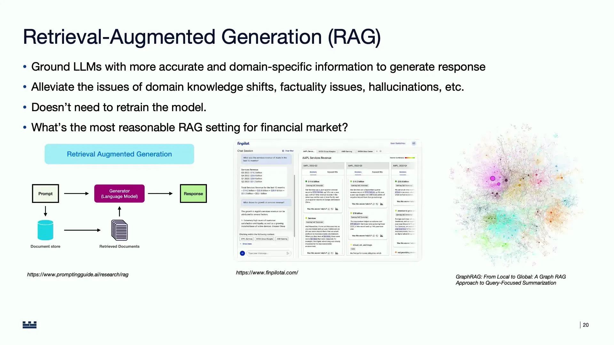
Ground LLMs with more accurate, domain-specific information → Reliably address domain knowledge drift, factuality, hallucinations — No need to retrain the model. What's the most responsible RAG setting for financial markets?
用更准确、更领域化的信息为 LLM 提供依据 → 缓解领域知识漂移、事实性问题与幻觉，无需重新训练模型。金融市场最负责任的 RAG 设置是什么？
[54:03 – 54:20]
So my question is, is that gonna be, like the problem come up with the noiseness and the current reasoning ability for the large-language models, is that a way to de-noise that?
所以我的问题是，这是否会像噪音问题和大语言模型当前的推理能力一样，是一种消除噪音的方法吗？
[54:22 – 54:41]
So first, I think in this slide I just point to that's a possible direction to pursue because think about how we build for image tasks. How do we convert from some like image processing techniques to some convolution and you want to transformer, right?
首先，我认为在这张幻灯片中我只是指出这是一个可能追求的方向，因为考虑一下我们如何构建图像任务。我们如何从一些类似的图像处理技术转换为一些卷积技术，并且您想要变换，对吧？
[54:41 – 54:55]
So you always, how do you interpret the data, right? If you have very strong prior, say that, okay, the image has some long relation can be captured by transformer, then probably convolution probably not a good idea, right? So that in here, so why we sometimes
所以你总是如何解释数据，对吧？如果你有很强的先验，那么好吧，图像有一些长的关系可以被 transform all 捕获，那么卷积可能不是一个好主意，对吧？所以在这里，所以为什么我们有时
[54:56 – 55:11]
people want to use graph RAGk instead of the regular RAG because the data has already present a graph relation between the data. So that's a very strong prior they ingest into. So it's always about how you interpret data because if it's graph, you can also reorder them
人们希望使用图 ragk 而不是常规 rag，因为数据已经呈现了数据之间的图关系。所以这是他们吸收的一个非常重要的先决条件。因此，这始终与您如何解释数据有关，因为如果它是图表，您还可以对它们重新排序
[55:11 – 55:22]
into a sequential by using the regular RAG system, right? So it's always about how you interpret the data to different format. There is no unique answer. It's always about what's your prior and whether the prior is correct.
通过使用常规 rag 系统将其转换为顺序，对吧？因此，关键在于如何将数据解释为不同的格式。没有唯一的答案。这总是关于你的先验是什么以及先验是否正确。
[55:22 – 55:32]
Okay, thank you. Maybe I can. So if there are some like a general, oh, I don't know. Does this work? I just wanted to add some color for your first question
好的，谢谢。也许我可以。所以如果有一些像将军一样的，哦，我不知道。这有效吗？我只是想为你的第一个问题添加一些色彩
[55:32 – 55:42]
because you were asking, do we train our own language models or do we use existing models? I think there are two orthogonal problems that we're solving. One of them for textual data.
因为你问，我们是训练自己的语言模型还是使用现有的模型？我认为我们正在解决两个正交问题。其中之一用于文本数据。
[55:42 – 55:58]
The goal is first, how do you use the existing language models as well as possible and how do you potentially fine tune them or put them in more complex systems to help us trade. And that's an effort that Tianqi is working on. And there is the separate problem
目标首先是，如何尽可能地使用现有的语言模型，以及如何对它们进行微调或将它们放入更复杂的系统中以帮助我们进行交易。这也是天齐正在努力的方向。还有一个单独的问题
[55:58 – 56:12]
of how do you model financial data or market data that's not textual, right? For that, there aren't publicly available baselines. So for that, we do have to train our own models and our state-of-the-art is far ahead of what you could do with publicly available tools.
如何对非文本的财务数据或市场数据进行建模，对吧？为此，没有公开可用的基线。因此，为此，我们确实必须训练我们自己的模型，并且我们最先进的技术远远领先于您使用公开工具所能做到的。
[56:12 – 56:21]
So I would say the answer so far mostly applies to the textual problem. For that, we do start with the public baselines. Thank you. Thank you so much.
所以我想说到目前为止的答案主要适用于文本问题。为此，我们确实从公共基线开始。谢谢。太感谢了。